← 返回 408 复盘中心
怎么读这一页： 正文是书上的内容，我只做了结构重排和取舍 。色块分两个维度——① 按来源：
必记结论 （书上的考点句）、
我的补讲 、
陷阱 。② 按动作：
背景 · 考试不碰 ——虚线灰块，明确告诉你哪几段可以快速划过 ；
知识串联 ——绿块，就地标出这里和前面哪一章、和《组成原理》《操作系统》哪个概念是同一件事 。📄 p.N 点开跳到原书对应页；紫色 考点追踪 是王道标注的真题年份。⚠️ 本章的读法：43 页里 5.3 TCP 独占 29 页，吃掉 27 道真题里的 23 道，两道综合真题也全在这一节。
这一节几乎全是「动笔算」：逐轮 cwnd 演化、序号与确认序号、发送窗口取 min、连接建立与释放的时间、首部十六进制解析，五个题型撑起本章八成的分。 全章两条母公式 ：
发送窗口上限 = min[rwnd, cwnd]；
拥塞窗口逐轮演化 慢开始 ×2 但封顶到 ssthresh → cwnd ≥ ssthresh 后 +1 → 超时打回 1 / 3 个冗余 ACK 只减半。
再加一条序号规矩——SYN 与 FIN 各吃掉 1 个序号，纯 ACK 不吃。三样东西是本章的默写底线。 本章有一个别的章都没有的性质：27 道真题只有 2 道是综合题，其余 25 道全是选择题——这是四科已建章里综合题占比最低的一章，也意味着它的分最容易靠「刷熟套路」拿满 。
📄 p.224
本章定位
考纲内容 （三项 ）：（一）传输层提供的服务 ：传输层的功能；传输层的寻址与端口；无连接服务与面向连接服务；（二）UDP ：UDP 数据报；UDP 检验；（三）TCP ：TCP 报文段 ；TCP 连接管理 ；TCP 可靠传输 ；TCP 流量控制与拥塞控制 。
王道的复习提示 ：传输层是整个网络体系结构中的关键层次 。要求掌握传输层的功能、工作方式及原理，掌握 UDP 及 TCP（首部格式、可靠传输、流量控制、拥塞控制、连接管理等）。其中 TCP 报文分析、连接管理、流量控制与拥塞控制机制 ，出选择题、综合题的概率均较大，要将其工作原理透彻掌握。
必记 · 「关键层次」四个字要落到一句可操作的话上
王道说传输层是「关键层次」，但真正决定这一章地位的是它的位置 ：
传输层是「面向通信部分的最高层」，同时又是「用户功能中的最低层」 。这句话是全章的总纲 ：往下（网络层及以下）是通信系统 ，往上（应用层）是用户功能 ——
传输层就是这两个世界的接缝 。所有考点都在这条缝上 ：
端口 是接缝的接口（应用层怎么找到自己的数据）、可靠传输 是接缝的补丁（IP 不可靠，得在这补上）、
流量控制与拥塞控制 是接缝的阀门（上面想发多快 vs 下面能扛多快）。
我的补讲 · 144 道题该怎么刷（先看这张分布表再动手）
我把本章按小节数了一遍，页数、题量、真题三张图高度重合，且重心集中程度是全书之最 ：
小节 页数 原书题量 真题 真题/页 建议 5.1 传输层提供的服务 5 10 0 0 快读；但三条常识句是选择题常客，不能跳 5.2 UDP 7 22 4 0.57 投产比最高：7 页博 4 道真题，且 2024/2025 连考两年 5.3 TCP 29 75 23 0.79 ⭐⭐ 绝对第一重心，逐题动笔算 5.4 本章小结及疑难点 2 — — — 必读，6 条全是干扰项的来源 合计 43 107 27 0.63 —
⟹ 刷题顺序建议：5.3（75 题 23 真题）→ 5.2（22 题 4 真题）→ 5.1 → 5.4。
5.3 一节吃掉全章 67% 的页数、70% 的题量、85% 的真题。
⚠️
但 5.1 不能跳 ：它只有 5 页、0 道真题，
可 5.3 的每一道窗口题都建立在 5.1.2 的「套接字 = IP : 端口」之上 ，
而「端到端 vs 点到点」这个定语在 5.1 的 04、10 两题连考两次，是 ch1 选择题的老面孔。 我的补讲 · 27 道真题的年份分布：唯一的缺口 2023 是个「假缺口」
年 09 10 11 12 13 14 15 16 17 18 19 20 21 22 23 24 25 道数 2 1 2 1 1 2 1 1 1 1 2 2 3 2 0 2 3
十七年里只有 2023 一年挂零，但这个零是假的 ：正文的「考点追踪」在
2023 上足足标了
5 处 ——
三次握手字段解析 · 四次挥手字段解析 · 拥塞避免算法原理 · 拥塞控制与传输效率分析 · 拥塞窗口演化分析 。
⟹ 2023 年一定考了传输层，只是王道把那道题归进了别的章（多半是跨 ch4 的组合题）。
所以别把「本章缺 2023」当成「2023 没考传输层」——那 5 个考点恰恰是本章最硬的 5 个，一个都不能漏。 我的补讲 · 综合真题只有 2 道，但这 2 道性质完全互补，必须各练透一遍
本章综合真题只有 2012 与 2016 两道 （按 15 分估 ≈ 30 分）——
远少于 ch4 的 10 道（≈150 分） 。
但正因为只有两道，它们的「代表性」被拉到最满：一道纯静态解析，一道纯动态推演，把 TCP 的两种考法各占了一头。
年份 题型 要做的动作 串起的考点 2012 纯抓包解析 （静态）数字节偏移、查表、做减法 ，一个公式都不用IP+TCP 双首部逐字段 · SYN/ACK 组合定握手 · TTL 相减反推跳数 · 以太网最小帧填充 2016 纯机制推演 （动态）逐轮往下推 ，一步错则全错三次握手确认序号 · 缓存只进不出致 rwnd 递减 · min[rwnd,cwnd] · 窗口归零时的序号与平均速率 · 最短释放时间
⟹ 两道题的复习方法完全不同 ：
2012 要练的是「手不抖」（数偏移别数错、十六进制别转错）；
2016 要练的是「链不断」（五个考点一环扣一环，中间任何一环卡住后面全废）。
2016 那道题我在 5.3 末尾单独拆成了一节讲，它是本章事实上的「母题」——
选择题 40、48（2015）、26、58（2022）、59（2024）全是从它身上撕下来的一块。 知识串联 · 传输层在五层模型里的位置：三个「之间」的定语必须能背
分层 ch1 的五层模型里，三层的作用范围是逐级放大又逐级精确 的：
数据链路层 ＝ 相邻节点之间（一段链路）· 网络层 ＝ 主机之间（host-to-host）· 传输层 ＝ 进程之间（端到端 / process-to-process） 。端到端 vs 点到点 ⚠️ 这是 408 里最容易记混的一组定语 ：
「端到端」在王道里默认专指传输层 ，网络层那句标准表述是「主机到主机」。
5.1 的第 10 题就是拿「传输层提供的是主机间的点到点数据传输」当错误选项——错就错在「点到点」三个字。 一句话记牢它们的关系 「端到端通信是由一段段的点到点信道构成的，端到端协议建立在点到点协议的基础之上」
（5.1 第 04 题的解析原话）——这句话同时解释了为什么传输层能在不可靠的 IP 之上造出可靠信道：它不修每一段，它只管两头对不对得上 。 可靠性上移 ch4 开篇那句「TCP/IP 的网络层只提供无连接、尽最大努力交付的数据报服务」，就是本章存在的全部理由 ：
IP 把可靠性甩锅给了传输层，本章 43 页干的就是接住这口锅。
知识串联 · 本章会第三次遇到「滑动窗口」——前两次在 ch3，这次是终章
滑动窗口 408 里滑动窗口一共出现三次，一次比一次复杂 ：
① ch3 3.4 数据链路层的停止-等待 / GBN / SR——窗口大小固定 ，只管一段链路；
② 本章 5.3.5 流量控制的 rwnd——窗口由接收方动态通告 ，管两个进程；
③ 本章 5.3.6 拥塞控制的 cwnd——窗口由发送方自己根据网络反馈调 ，管全网。 ⟹ 三者叠加出本章的母公式：发送窗口上限 = min[rwnd, cwnd]。
ch3 那两个窗口协议不是白学的——TCP 的重传机制正是 GBN 的累积确认 + SR 的接收方缓存 的混合体 （5.4 疑难点第 2 条）。累积确认 ch3 3.4 GBN 的「确认序号 N 表示 N−1 及以前全收到」，到本章一字未改地继承下来 ——
连它的容错性质都一样：后一个确认可以顶替丢掉的前一个确认 （5.3 综 01 就考这一句）。
5.1 传输层提供的服务
📄 p.224
5.1.1 传输层的功能
传输层位于网络层之上、应用层之下 ，为运行在不同主机上的进程之间 提供逻辑通信。它是面向通信部分的最高层 ，同时也是用户功能中的最低层 。即使网络层协议不可靠（分组丢失、失序、重复），传输层仍能为应用程序提供可靠的服务。
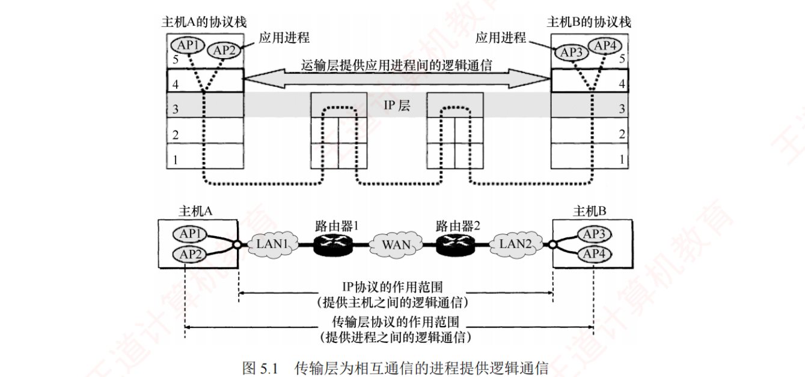
图 5.1 传输层为相互通信的进程提供逻辑通信 。上半是两台主机的五层协议栈 ：主机 A 的 AP1 /AP2 与主机 B 的 AP3 /AP4 ，第 4 层之间画着「运输层提供应用进程间的逻辑通信」双向箭头；中间的路由器只画到第 3 层 。下半是真实的物理路径 ：主机A—LAN1—路由器1—WAN—路由器2—LAN2—主机B。⭐ 看这张图只需盯住那两条括住范围的标注线 ：内圈是「IP 协议的作用范围（主机之间的逻辑通信）」，外圈是「传输层协议的作用范围（进程之间的逻辑通信）」——外圈把内圈整个包住 。这就是「端到端 ⊃ 主机到主机」的图证 ，也是 5.1 第 02、04、10 三题的判据来源。另注意路由器为什么只到第 3 层 ：路由器不认端口号，所以它根本进不了传输层 ——「传输层的中间设备是不存在的」这句话，图上是用「路由器矮一截」画出来的。 四大功能
应用进程之间的逻辑通信 。从网络层看通信两端是两台主机；但「主机之间的通信」实质是主机中应用进程之间 的通信 ，也称端到端 的逻辑通信。IP 虽把分组送达目的主机，但该分组仅停留在主机的网络层，并未交付给具体的应用进程 ——从传输层视角看，通信的真正端点并非主机，而是主机中的进程。 复用和分用 。复用 ＝发送方多个应用进程可使用同一个传输层协议传送数据；分用 ＝接收方传输层剥去报文首部后，能把数据正确交付给对应的目的应用进程。差错检测 。传输层对整个报文（首部 + 数据部分）做差错检测 。TCP 发现出错 ⟹ 要求发送方重传；UDP 发现出错 ⟹ 直接丢弃 。提供面向连接和无连接的传输服务 。传输层向上屏蔽了底层网络的复杂性（拓扑、路由协议等），使应用进程感知到的是一条端到端的逻辑通信信道 。用 TCP 时该信道表现为全双工的可靠信道 ；用 UDP 时仍为不可靠信道 。
必记 · 网络层也有复用/分用，别以为这是传输层的专利
书上用一个【注意】框专门点出来：网络层的复用是把不同传输层协议的数据封装成 IP 数据报发送；
网络层的分用是接收方根据 IP 首部的「协议」字段 把数据交付给相应的传输层协议。 ⟹ 两层分用看的字段完全不同：网络层看「协议」字段（6=TCP，17=UDP），传输层看「端口号」字段。
这一句是 5.1 与 5.2 两节共用的判据，2018 真题（UDP 靠哪个字段分用）问的就是它的下半句。
我的补讲 · 「差错检测」这一条藏着两层对照，是选择题的固定考法
书上这一条只写了两句话，但它同时压住了两组对照，命题人两组都考过：
对照 网络层（IP） 传输层（TCP/UDP） 考过的地方 校验范围 只校验首部 ，不管数据部分首部 + 数据一起校验 5.1 综 01 · 5.2 第 02 题 出错后的动作 丢弃 TCP 重传 / UDP 丢弃 5.2 第 07 题
书上说 X：「传输层对整个报文做差错检测」。
潜台词是 Y：IP 的检验和保护不了你的数据 ——
IP 首部检验和只保证「这个分组没走错门」，数据在路上被打翻了它一无所知。
所以能考 Z：凡是问「谁能发现数据部分的错误」，答案永远不可能是 IP。
反过来，2025 真题问「NAT 改了源 IP 之后 UDP 哪些字段要变」，正是因为 UDP 检验和把伪首部里的 IP 地址也算进去了——校验范围宽，代价就是牵一发动全身 。 我的补讲 · 「传输层没有中间设备」是一条能秒杀选择题的隐藏结论
图 5.1 里路由器只画到第 3 层，这不是省笔墨，是一条硬结论 ：
传输层协议只运行在两台端主机 上，网络中间的任何设备（路由器、交换机、集线器）都不处理传输层。 书上说 X ：图上路由器矮一截。潜台词是 Y ：路由器不认端口号，TCP 的重传、流量控制、拥塞控制全部由两端主机自己完成，网络本身「不知情、不参与、不负责」 。
所以能考 Z ：① 5.2 第 13 题问「跨网络传输时哪些字段一定不变」——UDP 总长度与 UDP 检验和不变，正因为没有中间设备去动它们 （而 MAC 地址、FCS、IP 检验和每跳都变）；
② 拥塞控制那一节反复强调「通信端点无法直接获知拥塞细节，只能通过时延增加间接感知」——也是因为路由器不会好心告诉你它堵了。
背景 · 考试不碰：「逻辑通信」那条脚注
书上给「逻辑通信」加了一条脚注：指对等层之间的通信看似沿水平方向传送，但实际上并不存在一条水平方向的物理连接 。
这条脚注是给初学者解释「为什么图上画的是横线」的，从不单独出题 ，快速划过即可。但它下面那句「传输层是面向通信部分的最高层，同时也是用户功能中的最低层」要停一下 ——
这一句会以「传输层在 OSI 参考模型中是第几层」的形式出现（5.1 第 10 题选项 A：第 4 层 ，是对的）。
知识串联 · 「复用与分用」在 408 里一共出现四次，是一条贯穿全书的线
分用 每一层都要回答同一个问题：「我把数据交给上面哪一个？」——靠的都是一个字段：
层 靠什么分用 取值举例 在哪一章学的 数据链路层 帧的类型字段 0x0800 = IP，0x0806 = ARP ch3 以太网帧格式 网络层 IP 首部协议字段 1=ICMP · 6=TCP · 17=UDP · 89=OSPF ch4 图 4.5 传输层 目的端口号 21=FTP · 53=DNS · 80=HTTP 本节（2018 真题） 应用层 用户界面 — ch6
⟹ 四行连起来读，就是一个数据包从网卡爬到浏览器的完整路线图。
408 特别爱考「跨层」的问法，例如「路由器根据什么把分组交给 TCP」（答：协议字段，不是端口号）——
问的是网络层的动作，答案就必须是网络层的字段。
复用 反方向也一样：多个 TCP 连接共用一个 IP，多个 IP 协议共用一条链路 ——
这与 ch2 物理层的「频分/时分复用」是同一个词的两种含义 ：
ch2 复用的是信道 （把带宽切开给多路信号），本章复用的是协议栈 （多个进程共用一个协议实体）。别把两者混为一谈。 📄 p.225
5.1.2 传输层的寻址与端口
端口是传输层与应用层交互的接口 ：应用进程通过端口把数据向下交给传输层，传输层通过端口把收到的数据向上交给正确的应用进程。TCP 与 UDP 都用首部中的源端口 和目的端口 两个字段实现这一服务访问。
必记 · 四层的「服务访问点」各是什么（书上的【注意】框，一张表背完）
层 服务访问点 数据链路层 帧的「类型」字段 网络层 IP 数据报的「协议」字段 传输层 「端口号」字段 应用层 「用户界面」
这四行是一条完整的「向上交付链」：帧靠类型字段找到 IP，IP 靠协议字段找到 TCP/UDP，TCP/UDP 靠端口号找到进程。
能把这条链说完整，5.1 的复用/分用类题目就没有做不出来的。 端口号的三段区间
端口号长度 16 比特 ，可表示 65536（216 ） 个端口号。端口号仅具有本地意义 ——只标识本机应用层中的进程；不同主机的相同端口号没有关联，且 UDP 和 TCP 的端口号彼此也是独立的 。
类别 范围 说明 熟知端口号 0～1023 由 IANA 分配给最重要的 TCP/IP 应用，供所有用户熟知 登记端口号 1024～49151 未获熟知端口号的应用使用，需在 IANA 登记以免冲突 客户端端口号 49152～65535 客户进程运行时动态分配 ，故又称短暂端口号 ；通信结束即被回收复用
应用程序 FTP TELNET SMTP DNS TFTP HTTP SNMP 熟知端口号 21 23 25 53 69 80 161
陷阱 · FTP 是 21 和 20，没有 24
5.1 第 08 题问「下列哪个 TCP 熟知端口号是错误的」，答案是 D：FTP:24。
FTP 有两个端口：控制连接 21、数据连接 20。
命题人特别爱在 FTP 上下手，因为它是唯一一个「占两个端口」的熟知服务 ——
把 21 记成唯一答案的人，遇到「FTP 数据连接用哪个端口」就会全军覆没。
另一个高频改造：把 21 和 20 对调 （说「控制用 20、数据用 21」）——记法是「控制在前、数字在后」：控制 21 > 数据 20。
套接字
通过 IP 地址 区分不同主机，通过端口号 区分同一主机中的不同进程，两者拼接即构成套接字：套接字（Socket）＝（IP 地址 : 端口号） 。套接字唯一标识网络中某台主机上的一个应用进程，是通信的端点。
我的补讲 · 「端口号只有本地意义」这一句能同时解决三道题，务必吃透
书上说 X ：端口号仅具有本地意义，UDP 与 TCP 的端口号彼此独立。
潜台词是 Y ：
端口号不是全球唯一的资源，它只是本机进程表里的一个下标 ——
你机器上的 8080 和我机器上的 8080 毫无关系，你机器上 TCP 的 53 和 UDP 的 53 也毫无关系。
所以能考 Z（三题连坐） ：
题 问法 答案的落点 5.1 第 09 题 TCP 与 UDP 的端口能否共存于同一主机 能 ——互不干扰，可以使用相同的端口号 5.3 第 03 题 不同计算机的相同端口号有无联系 无 ——这是错误选项的来源5.3 第 02 题 客户访问 Web 服务器时客户端用哪个端口 由客户端操作系统动态分配 ，不是 80
⚠️ 特别注意第三行：80 是服务器端 的 HTTP 进程端口，客户端那一头永远是 49152～65535 里随机挑的一个。
这个方向感在 2012 综合真题里直接变成了得分点——那道题里 目的端口 21 说明这是 FTP 连接、源端口 3368 说明这是客户发起的 。 我的补讲 · 套接字这个概念现在看着像废话，到 5.3.3 会变成送分点
5.1.2 讲套接字时你多半会觉得「这不就是 IP 加端口吗」，然后划过去。
但 5.3.3 开头有一句几乎一模一样的话，那句话是要考的 ：「TCP 连接的端点既不是主机、IP 地址，也不是应用进程或端口，而是套接字 。一条 TCP 连接由通信双方的两个套接字唯一确定。 」 于是本节这句不起眼的【注意】就成了硬考点 ：
同一个 IP 地址可以参与多个 TCP 连接，同一个端口号也可以出现在多个不同的 TCP 连接中。 ⟹ 判断「两条连接是不是同一条」的唯一标准是四元组 （源 IP、源端口、目的 IP、目的端口），
只要有一个不同就是两条不同的连接。
这正是一台 Web 服务器能用同一个 80 端口同时服务上万个客户的原理——端口没变，变的是对面的套接字。
我的补讲 · 熟知端口表怎么背：按「数字递增」串成一句话
七个端口号硬记很容易串，按数字从小到大排一遍，会发现它们自带节奏：
20/21 FTP （数据/控制） ← 两个挨着的，控制在后
23 TELNET ← 21 之后隔一个
25 SMTP ← 23 之后隔一个（23、25 都是奇数）
53 DNS ← 唯一的「五十几」
69 TFTP ← 唯一的「六十几」，比 FTP 大得多
80 HTTP ← 最好记的一个
161 SNMP ← 唯一超过 100 的
这张表的结构 比数字本身更值得记 ：
21/23/25 是「老三样」（文件、终端、邮件），三个数字连着；53/69 是两个中段；80 和 161 各站一头。
所以能考 Z ：
命题人改数字时几乎只在「老三样」里做手脚（把 21 改成 24、把 23 与 25 对调） ——
5.1 第 08 题就是把 FTP 改成了 24 。
把 21/23/25 这三个连号背成一串，改动一眼就能看出来。
⚠️ 另外记住 DHCP 的 67（服务器）/68（客户端） ——本表没列，但 ch4 与 ch6 都要用。 📄 p.226
5.1.3 无连接服务与面向连接服务
TCP（传输控制协议）
面向连接 ，提供可靠的全双工逻辑信道 。传输前先建立连接、结束后释放连接。TCP 不提供广播或多播服务。 首部开销大、处理资源消耗高 。FTP、HTTP、SMTP、TELNET 。
UDP（用户数据报协议）
无连接 ，提供不可靠的逻辑信道 。无须建立连接，收到数据报也不发确认 。仅提供两项服务：多路复用与分用、数据差错检测 。TFTP、DNS、DHCP、RIP、SNMP 。
必记 · 表 5.1 应用与传输层协议对照（必须能双向默写）
互联网应用 应用层协议 传输层 域名解析 DNS UDP 文件传送（简单） TFTP UDP 路由选择 RIP UDP IP 地址分配 DHCP UDP 网络管理 SNMP UDP 电子邮件 SMTP TCP 远程终端接入 TELNET TCP 万维网 HTTP TCP 文件传送 FTP TCP
记法：把「一问一答、报文短、丢了无所谓、要广播」的全划给 UDP，剩下的给 TCP。
五个 UDP 应用有一条共性——它们都是「一次性传输少量数据」或「需要广播/多播」 ；
DHCP 甚至在还没有 IP 地址时就要通信，根本没条件建连接。 我的补讲 · 表 5.1 有两处最容易被换掉，考前专门盯这两行
这张表命题人不会整张考，只会挑最像的两行做手脚：
易错行 正确 命题人爱写成 为什么会错 TFTP vs FTP TFTP 用 UDP ；FTP 用 TCP都写成 TCP 两个名字只差一个 T，「简单文件传送」用 UDP、「文件传送」用 TCP RIP vs OSPF/BGP RIP 用 UDP ；OSPF 直接用 IP ；BGP 用 TCP 三个都写成 UDP ch4 学过的三协议对照表在这里又考了一次
⚠️ 第二行是跨章送分题 ：
ch4 表 4.6 已经把「RIP/UDP·OSPF/IP·BGP/TCP」考过一遍，本章又借表 5.1 考一遍——
同一条知识在两章各值一道选择题 。
特别记住 OSPF 那一格：它连传输层都不用，直接封装在 IP 数据报里（协议号 89） ，
是全 408 里唯一一个「应用层协议不走传输层」的例子。 知识串联 · UDP 数据报 vs IP 数据报：一个不起眼的【注意】框，其实是 ch4 的回扣
封装 书上末尾的【注意】：IP 数据报在网络层需经路由器存储转发；而 UDP 数据报作为 IP 数据报的载荷 ，
在网络层传输时其内容对路由器不可见。 ⟹ 这就是 ch4「封装」概念在本章的第一次回扣：上层的一切对下层都只是一串不透明的字节。
路由器看得见 IP 首部（所以能改 TTL、重算 IP 检验和），看不见 UDP 首部（所以 UDP 长度、UDP 检验和一路不变） ——
5.2 第 13 题「哪些字段一定保持不变」的整道题，就建立在这一句上。 NAT 是例外 ⚠️ 但 NAT 路由器是个「越界」的家伙 ：它为了复用一个公网 IP，硬要去改传输层的源端口号 ——
这正是 2025 真题的题眼，也是为什么课本一直说「NAT 破坏了分层原则」。
知识串联 · 「无连接 vs 面向连接」这组词，你在 408 里已经见过三次
虚电路 vs 数据报 ch4 4.1.3 的虚电路（面向连接）与数据报（无连接）——那是网络层 的一对 。TCP vs UDP 本节 的 TCP（面向连接）与 UDP（无连接）——这是传输层 的一对 。⚠️ 两对之间没有任何绑定关系，这正是命题人下手的地方 ：
现实中的 TCP/IP 是「网络层无连接 + 传输层面向连接」 ——下面是数据报，上面是 TCP。
「面向连接的传输层必须配面向连接的网络层」是彻头彻尾的错误选项。 连接的实质 再往回一层：ch4 的虚电路连接是网络内部（路由器里） 存了状态；
本章 TCP 的连接是两端主机里 存了状态（缓存、拥塞参数、序号），网络中间一个字节的状态都没存 。
这个差别决定了 TCP 连接可以在 IP 这种「什么都不记」的网络上跑起来。
知识串联 · 「一段段的点到点构成端到端」——这句话在 408 里能用三次
端到端 vs 点到点 5.1 第 04 题的解析给了一句极好用的总纲 ：
「端到端通信是由一段段的点到点信道构成的，端到端协议建立在点到点协议的基础之上 」 。
这句话可以用来秒判三类题：
问的是 用这句话怎么答 TCP 的可靠是不是靠每段链路都可靠？ 不是 ——端到端协议不要求每一段都可靠，它只保证两头对得上链路层已有 CRC，传输层为什么还要检验和？ 因为路由器内部、协议栈内部的出错，CRC 管不着 ；端到端校验才管全程网络层可靠了，TCP 是否多余？ 不多余 （5.4 疑难点第 6 条）——IP 的失序/丢弃与链路差错无关
⟹ 这三问其实是同一个道理的三种问法：「逐段都对」推不出「整体对」 。
这正是计算机网络里著名的「端到端原则」 ——功能应当放在能真正保证它的那一层，也就是两端。 5.2 UDP
📄 p.229
5.2.1 UDP 数据报
UDP 仅在 IP 层的数据报服务之上增加了复用、分用和差错检测 三项功能。若应用开发者选择 UDP 而非 TCP，则应用程序几乎直接与 IP 打交道。尽管 TCP 提供可靠服务而 UDP 不提供，但 TCP 并非总是首选。
考点追踪：UDP 协议的优点（2014、2024）
必记 · 许多应用更适合 UDP 的五条原因（必背，2014 真题直接考）
UDP 是无连接的 ，没有建立连接的时延。TCP 要在主机中维护连接状态（发送/接收缓存、拥塞控制参数、序号与确认序号等），UDP 无须维护这些。 UDP 是面向报文的 。一次发送一个完整的报文，既不合并也不拆分，保留报文的边界。 UDP 的首部开销小，仅 8B；而 TCP 首部至少 20B。 UDP 支持一对一、一对多和多对多；TCP 仅支持一对一。 UDP 没有拥塞控制 ，网络拥塞不会影响源主机的发送速率。
⚠️ 第 2 条有个附带结论必须一起记：正因为 UDP 不拆不合，应用程序必须自己选好报文大小 ——
报文太长 ⟹ 交给 IP 后可能分片；报文太短 ⟹ IP 首部开销占比过大。两者都会降低传输效率。 我的补讲 · 五条优点怎么背：把它们压成「三个没有 + 两个能」
五条零散的话不好背，我把它压成一句口诀：
三个没有——没有连接、没有状态、没有拥塞控制；两个能——能一对多、能保留报文边界。
压缩后 对应原文 带来的直接后果（考点） 没有连接 第 1 条前半 省 1RTT ——2025 第 61 题 UDP 8ms vs TCP 16ms 就差在这没有状态 第 1 条后半 + 第 3 条 首部只要 8B ；服务器能扛更多客户 没有拥塞控制 第 5 条 速率恒定 ，实时应用要的就是这个能一对多 第 4 条 TCP 不能广播/多播 ——5.3 第 04 题的正解能保留边界 第 2 条 面向报文 vs 面向字节流 ——全章最爱考的一组对照
⟹ 反过来用更值钱：凡是选项里出现「UDP 提供流量控制 / 拥塞控制 / 按序投递 / 确认」，一律是错的（5.2 第 06 题四个选项就是这么造的）。 我的补讲 · 「面向报文 vs 面向字节流」——一句话讲清，考场上能秒答四五道题
书上分两处讲，我把它们并到一起：
UDP：面向报文 TCP：面向字节流 编号对象 不编号 每个字节都编号 边界 保留 （发一个收一个）不保留 （发几次收几次无关）能否拆合 既不合并也不拆分 可拆可合 ，长度由 TCP 自己定报文长度谁定 应用进程 TCP 自己 （看对方窗口和网络拥塞程度）
书上说 X ：TCP「并不关心应用进程一次向其缓存发送多长的数据」。
潜台词是 Y ：
你调 4 次 send 各发 100B，TCP 完全可能打成 1 个 400B 的段发出去；
也可能把 1 次 1000B 的 send 切成 3 段 ——
应用层的「一次调用」在 TCP 眼里毫无意义。
所以能考 Z ：① 这就是工程上说的
「粘包」 ，也是「UDP 不会粘包」的原因；
② 图 5.8 里 10B 数据被切成
0/3/6/8 四段，长度各不相同，正是「TCP 自己决定段长」的图示；
③
2016 综合真题的第 3 问「下一个待发送段的序号是多少」，问的是字节序号 而不是「第几个段」——如果你脑子里还是「一个报文一个编号」，这一问必错。 UDP 的首部格式
考点追踪：UDP 的首部格式及字段含义（2018）· UDP 首部的长度（2021）
UDP 首部有 8B，由 4 个字段组成，每个字段都是 2B ：
源端口号 。发送进程的端口号。需要对方回复时选用，不需要回复时可置为全 0。 目的端口号 。接收进程的端口号。该字段在所有 UDP 报文中都必须有效。 长度 。UDP 数据报的长度（包括首部和数据 ），最小值是 8 （仅有首部）。检验和 。由发送方传输层计算写入，接收方检测有无差错，有错就丢弃。在 IPv4 中可置全 0 表示未使用（不建议），在 IPv6 中强制启用。
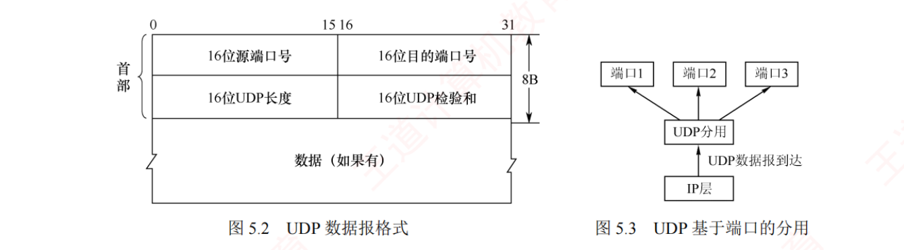
图 5.2 UDP 数据报格式 （上）与图 5.3 UDP 基于端口的分用 （下）。图 5.2 只有两行 ：第一行「16 位源端口号 ｜ 16 位目的端口号」，第二行「16 位 UDP 长度 ｜ 16 位 UDP 检验和」，两行合计正好标注 8B ，下面才是「数据（如果有）」。⭐ 看这张图请数一遍字段个数：只有 4 个，一个不多——没有「首部长度」字段（因为固定 8B，不需要）、没有序号、没有确认号、没有窗口、没有控制位 ，这正是 5.2 第 03 题（UDP 首部不包含什么）和 5.3 第 06 题（TCP 有而 UDP 没有的是序号）的全部依据 。图 5.3 更简单 ：IP 层 → UDP 数据报到达 → UDP 分用 → 端口1/端口2/端口3 三个分岔。盯住那个分岔点：分用只看目的端口号一个字段 ——这就是 2018 统考真题的答案（选 B 目的端口号）。 陷阱 · 「数据（如果有）」这四个字不是废话
图 5.2 底部写的是「数据（如果有 ）」——UDP 数据报可以没有数据部分 ，此时长度字段 = 8。
这就是「UDP 长度最小值是 8」的来源，5.2 第 04 题考的正是这一条。 顺带把三个相邻的坑一起记住 ：
① 长度字段 = 首部 + 数据（不是只算数据，也不是把伪首部算进去）；
② UDP 首部里没有 「首部长度」字段；
③ 与之对照，TCP 首部有 「数据偏移」字段（因为 TCP 首部长度是变的）。
我的补讲 · 目的端口不存在时会发生什么：一条通往 ch4 的暗线
书上用一句小字带过 ：若接收方 UDP 发现目的端口号不正确（不存在对应的应用进程），则丢弃该报文，并由 ICMP 发送「端口不可达」差错报文给发送方 。 这句话的信息量比它的字数大得多 ：
① 传输层自己不会报错 ，它只会丢；报错这件事是甩给网络层的 ICMP 干的 。
② 于是「端口不可达」成了 ICMP 五种差错报告报文里唯一一个由传输层触发的 ——
ch4 4.2.7 学 ICMP 时，「终点不可达」下面的子类型「端口不可达」，源头就在这里。 所以能考 Z ：Traceroute 的原理正是它的应用 ——
向目的主机一个不可能被使用的高端口 发 UDP 报文，目的主机回一个「端口不可达」，
发送方据此判定「已经到终点了，可以停止探测」。
ch4 学 Traceroute 时那句「最后一步靠端口不可达报文判定到达」，答案在本节。
背景 · 考试不碰：UDP 适用场景的那两段举例
书上在五条优点之后，用两段话举了 UDP 的应用场景：「常用于一次性传输少量数据的应用（DNS、DHCP）」「广泛用于多媒体应用（视频会议、流媒体）」 ，
还补了一句「UDP 不保证可靠交付，但这不意味着应用不要求可靠性——所有可靠性机制可由应用层自行实现 」。前两段的举例部分（谁用、为什么用）已经被表 5.1 完整覆盖，不必重复记 ，快速划过。
但最后那半句要停一下 ：「可靠性可由应用层自行实现」 ——
它正是 5.2 第 01 题的答案（使用 UDP 的网络应用，其可靠性由应用层 负责） ，
也是现代 QUIC 协议的思想来源（在 UDP 之上自己造一套可靠传输）。
我的补讲 · 源端口「可置全 0」这个小字，是一条能判错的硬结论
书上说 X ：源端口号需要对方回复时选用，不需要回复时可置为全 0 ；而目的端口号在所有 UDP 报文中都必须有效 。潜台词是 Y ：两个端口字段的地位并不对等 ——
目的端口是「必需品」（没有它就不知道交给谁），源端口是「可选的回信地址」（不需要回信就可以不写）。 所以能考 Z（两题） ：
① 2018 真题问「UDP 实现分用 时依据哪个字段」 ——答案是目的端口号 ，
源端口号「主要用于回信，非分用所必需」，这正是官方解析的原话 ；
② 5.1.2 讲套接字时说「源端口构成返回地址的一部分」 ——两处说的是同一件事的正反面。 顺带一提：TCP 没有这个「可置全 0」的说法 ——TCP 是面向连接的，四元组必须完整，源端口一个都不能省。
知识串联 · 「保留边界 vs 不保留边界」，在 408 里还有第三个例子
边界 「保留报文边界」这个性质，408 里一共出现三处，正好构成一个梯度 ：
出处 保留边界吗 后果 ch3 数据链路层的帧 保留 （靠帧定界）接收方能准确切出每一帧 本章 UDP 保留 （一次一个报文）发几次收几次，长度一一对应 本章 TCP 不保留 （字节流）发 4 次可能收 1 次，也可能收 7 次
⟹ 唯一「不保留」的是 TCP，而它恰恰是最可靠的那个——可靠与保留边界是两件不相干的事 。
命题人爱把它们捆在一起造错误选项 ：「TCP 提供可靠传输，因此能保证接收方按报文边界读取」——
错。
ch3 的帧定界 ch3 学的字符填充、零比特填充、违规编码，全都是为了「划出边界」 ；
TCP 主动放弃了这件事，把「怎么切」的责任推给了应用层 ——
这就是工程上必须自定义应用层协议长度字段的原因。 📄 p.230
5.2.2 UDP 检验
考点追踪：UDP 检验的原理（2025）· UDP 检验和的计算（2024）
计算检验和时，要在 UDP 数据报之前增加 12B 的伪首部 。伪首部并不是 UDP 的真正首部 ，只是在计算检验和时临时添加在前面，得到一个临时的 UDP 数据报，检验和就是按这个临时数据报计算的。伪首部既不向下传递给网络层，也不向上递交给应用层，而只是为了计算检验和。
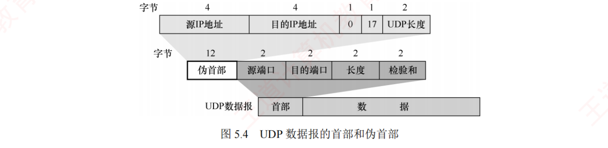
图 5.4 UDP 数据报的首部和伪首部 。上面 3 行是 12B 的伪首部 ：源 IP 地址（4B）· 目的 IP 地址（4B）· 全 0（1B）＋ 17（1B）＋ UDP 长度（2B） ；下面才是真正的 UDP 数据报 ：源端口 2 + 目的端口 2 + 长度 2 + 检验和 2，再接数据。⭐ 看这张图请把 12B 拆成 4+4+1+1+2 记住，五个数一个都不能错 ——2025 真题问「NAT 改了源 IP 后 UDP 哪些字段要改」，胜负手就是「源 IP 在伪首部里 ⟹ 检验和必须重算」 。另外盯住那个孤零零的 17 ：它是 IP 首部里的协议字段 值（UDP=17，TCP=6） ——TCP 算检验和时用的是同一张图，只把 17 改成 6、把「UDP 长度」改成「TCP 长度」，其余完全一样 。那个「全 0」的 1B 是纯填充，只为凑齐 4B 对齐，没有任何含义。 计算检验和的四步（必背）
发送方先把检验和字段置为全 0 ，然后把伪首部与 UDP 数据报 视为一连串 16 位字。
若 UDP 数据部分的长度为奇数 个字节，计算时在末尾补一个全 0 字节 （该填充字节只在计算时临时添加，不影响实际发送的数据 ）。
按二进制反码规则 对所有 16 位字求和，把结果的反码 填入检验和字段后发送。
接收方把收到的 UDP 数据报与伪首部重新组合，再按二进制反码求和。若无差错，结果应为全 1（16 位全为 1） ；否则丢弃。
二进制反码求和的规则 ：① 从低位到高位逐列计算，0+0=0，0+1=1，1+1=0 并产生进位 1；② 若最高位相加后产生进位，则需将该进位加到结果的最低位，这个过程称为回卷 。
书上的三字例（🐍 已 Python 逐步复算，与书上完全吻合）
01100110 01100000
01010101 01010101
10001111 00001100
前两字和 10111011 10110101
再加第三字（最高位产生进位，需加至最低位）：
10111011 10110101
+ 10001111 00001100
01001010 11000001
+ 1 ← 回卷：进位加至最低位
01001010 11000010
取反码得检验和：
10110101 00111101
我的补讲 · 检验和只有两个动作，缺一不可——2024 真题的四个选项就是这么造出来的
2024 统考真题：中间结果 1011 1001 1011 0110，再加最后一个 16 位数 0110 0101 1100 0101，求检验和。
1011 1001 1011 0110
+ 0110 0101 1100 0101
[1] 0001 1111 0111 1011 ← 最高位产生了进位
+ 1 ← 动作一：回卷
0001 1111 0111 1100
1110 0000 1000 0011 ← 动作二：取反 ⟹ 答案 C
⚠️ 四个选项的来源（这是本题最值钱的部分）：
选项 值 是怎么造出来的 A 0001 1111 0111 1011 忘记回卷（直接丢掉最高位进位）且 忘记取反 B 0001 1111 0111 1100 回卷做对了，但忘记取反 C 1110 0000 1000 0011 回卷 + 取反，两个动作都做了 ✓ D 1110 0000 1000 0100 取反做了，但回卷时把 1 加到了错误的位
⟹ 命题人把「漏做动作一」「漏做动作二」「两个都漏」「动作做歪」四种失误各造了一个选项，一个不落。
这道题不存在「蒙对」的可能，只有一条路：把两个动作都做对。
考场提速建议：先在草稿上写「回卷 ✓ 取反 ✓」两个字，做完一个划掉一个。 陷阱 · 检验和的「全 0」与「全 1」是两回事，5.2 第 08、09 题各考一次
场合 填什么 含义 不使用检验和 全 0 告诉接收方「我没算，你别校验」 算出来恰好是 0 全 1 因为全 0 已被占用作「未使用」，只能用全 1 表示这个 0 接收方校验通过 结果为全 1 注意这是接收方求和的结果 ，不是填在字段里的值
三个「全 X」挤在一起，是本节最容易糊成一团的地方。
记法：发送方那两个「填什么」是一对反义词（不算填 0、算出 0 填 1）；接收方那个「全 1」是判据，跟填什么无关。 我的补讲 · 伪首部为什么值 12B：它买到的是「防走错门」的能力
书上给了一句关键的【注意】 ：通过伪首部，UDP 不仅能校验源端口、目的端口和数据内容，
还能检测 IP 首部中的源地址和目的地址是否在传输过程中因错误而改变 。 书上说 X ：伪首部里放了源 IP 和目的 IP。
潜台词是 Y ：UDP 想确认的不只是「数据没坏」，还有「这份数据确实是发给我这台机器的 」 ——
因为 IP 检验和只校验 IP 首部，万一是首部校验漏过的错误改了目的地址，分组会送到一台无辜的机器上。 所以能考 Z（三题） ：
① 5.2 第 09 题 ：伪首部要不要发给目的主机？不要 ——它只是临时算一下，不下传也不上交 ；
② 5.2 第 02 题 ：UDP 长度字段包不包括伪首部？不包括 ；
③ 2025 真题 ：NAT 改了源 IP，检验和要不要重算？要 ——正因为源 IP 被算进了伪首部。
这三题问的是同一件事的三个侧面：伪首部「参与计算，但不参与传输，也不参与长度」。
我的补讲 · 2025 真题（NAT 改哪些 UDP 字段）：四个选项逐个过一遍
题干：路由器实现 NAT，内网主机 H 是 192.168.1.5/24，H 发出一个 UDP 报文段，路由器转发时 UDP 首部 里哪些字段会被改？
字段 改不改 为什么 Ⅰ 源端口号 改 ✓ NAT 用「公网 IP + 新端口号」区分内网各主机，这是 NAT 复用的核心动作 Ⅱ 目的端口号 不改 目的进程没变，改了就送错进程 Ⅲ 总长度 不改 只由 UDP 数据自身决定，NAT 没增删数据 Ⅳ 检验和 改 ✓ 伪首部含源 IP，源 IP 被换了 ⟹ 必须重算
⟹ 答案 B（仅 Ⅰ、Ⅳ）。
这道题的设计非常毒：Ⅰ 是「NAT 的本职工作」，几乎所有人都能选对；胜负全在 Ⅳ 上，
而 Ⅳ 要求你把「伪首部包含源 IP」这个 5.2.2 的细节 和「NAT 改源 IP」这个 ch4 的细节 接在一起。
两章各知道一半的人，恰好会漏掉 Ⅳ 选成 A（仅 Ⅰ、Ⅲ）或直接选「仅 Ⅰ」。
顺带一提：TCP 走 NAT 时同理，源端口 + 检验和一起改。 本节的两条计算母公式
必记 · 母公式一：UDP 分片（5.2 第 11 题、综 05 都是它）
① 总长 = UDP 数据 + 8 （UDP 首部只算进第一片，不是每片都有）
② 每片最大数据 = MTU − 20 = 1500 − 20 = 1480
③ 片数 = ⌈总长 / 1480⌉
④ 片偏移 = 累计字节数 / 8 = 0, 185, 370, 555, 740, 925, …（每片 1480/8 = 185）
两个例子对照着记（🐍 均已复算）：
题 UDP 数据 总长 片数 最后一片数据 片偏移序列 第 11 题 9192B 9200B 7 9200−6×1480 = 320B 0,185,370,555,740,925,1110 综 05 8192B 8200B 6 8200−5×1480 = 800B 0,185,370,555,740,925
⚠️ 两个最容易犯的错：① 忘了加 UDP 首部那 8B（直接拿数据长度去除）；② 片偏移忘了除以 8（写成 0,1480,2960）。 我的补讲 · 母公式二：传输效率——胜负手是「IP 首部到底取 20B 还是 60B」
有效载荷效率 = 应用层数据 ÷ (数据 + MAC 首尾 18B + IP 首部 + UDP 8B / TCP 20B)
5.2 第 12 题：应用层数据 200B，传输层 UDP，网际层 IP 采用最大首部长度 ，以太网传输，问传输效率。
200 ÷ (200 + 18 + 60 + 8) = 200 / 286 = 69.9% ⟹ 答案 C 🐍 已复算
⚠️ 「采用最大首部长度」六个字就是全题的胜负手 ：
IP 首部要取 60B （首部长度字段最大值 15 × 4B），不是习惯性的 20B。
若误取 20B，会算出 200/246 = 81.3%，正好落进选项 A（82.6%）附近的陷阱区。
同族公式还有一道 2021 真题（第 55 题），换成了「最大」的反面：
协议 首部 传 12B 应用数据的总长 最大传输效率 UDP 固定 8B 12+8 = 20B 12/20 = 60% TCP 最短 20B （无选项）12+20 = 32B 12/32 = 37.5%
⟹ 两道题连起来看就懂命题人的手法了：问「最大效率」就把首部取最小 ，题干写「最大首部长度」就把首部取最大 。
读题时先圈出「最大/最小」落在谁头上，再动笔。 我的补讲 · 综 03 是一道不用算的题，但它考的东西比算题还硬
题干 ：应用程序用 UDP，IP 层分成 4 片；第一次传输前两片丢失、后两片到达；重传后前两片到达、后两片丢失 。
目的站能否把这两次的 4 片拼成一个完整数据报（假定第一次收到的那两片还在缓存里）？答案：不行。
因为重传时 IP 数据报的「标识」字段 会取另一个值，而只有标识符相同的片才能组装成同一个 IP 数据报 。 这道题真正在考的是：你把 ch4 的「标识字段」理解成什么了。
很多人把它记成「一个计数器」就过去了，本题逼你想清楚它的用途 ——它是分片重组的「分组身份证」 。 ⟹ 由此可以反推出 ch4 分片重组的三件套 ：
① 标识 （哪些片属于同一个原分组）· ② 片偏移 （这片放在第几个字节）· ③ MF 标志 （后面还有没有片）——
三者缺一就拼不出来。2012 综合真题里靠「标识字段 019b/019c/019d 递增」判断发送顺序，用的是同一个字段的另一个侧面。
知识串联 · UDP 这一节几乎每一句都在回扣 ch4
分片 5.2 的两道计算题（第 11 题、综 05）本质上是 ch4 4.2.1 的分片题换了个壳 ：
唯一的新东西只有「先给数据加 8B UDP 首部」这一步 ，后面的 1480、÷8、⌈⌉ 全是 ch4 原样搬过来的。 协议字段 伪首部里那个 17 ＝ ch4 IP 首部「协议」字段的取值。
408 要记的协议号只有三个：1 = ICMP · 6 = TCP · 17 = UDP （外加 OSPF 的 89）。 NAT 2025 真题把 ch4 的 NAT 和本节的伪首部焊在了一起 ——这是本章唯一一处明确的跨章组合考法 。ICMP 端口不可达差错报文 ：传输层发现问题，却要借 ch4 的 ICMP 之口去报告 。尽最大努力交付 UDP 之所以「不可靠」，不是它自己做错了什么，而是它什么都没加 ——
IP 是什么样，UDP 就是什么样，它只加了端口和一个检验和。
所以有个说法很准：UDP 是「暴露在应用层面前的 IP」。
知识串联 · 五个 UDP 应用，四个会在 ch6 应用层再考一遍
端口号 DNS 53 · TFTP 69 · SNMP 161 · DHCP 67/68 ——这几个端口号在 ch6 还要再背一次 ，
现在顺手记熟，等于替 ch6 省了一轮。 为什么它们用 UDP 四个应用有一条共性：一问一答、报文短、丢了重问一次就行 。
DNS 查询一个域名就一个 UDP 报文，若为此建 TCP 连接，光三次握手就比查询本身还贵 ——
2025 第 61 题（UDP 8ms vs TCP 16ms）量化的正是这笔账。 DHCP 的特殊性 ⚠️ DHCP 用 UDP 还有一个别人没有的理由：它工作时主机还没有 IP 地址 ，
只能靠广播（255.255.255.255）——而 TCP 根本不支持广播。
ch4 学 DHCP 四步时那个「源地址 0.0.0.0、目的地址 255.255.255.255」，就是「必须用 UDP」的铁证。
知识串联 · UDP 的检验和 vs ch3 的 CRC vs ch4 的 IP 检验和：三种校验，三种性格
差错检测
ch3 CRC ch4 IP 检验和 本章 UDP/TCP 检验和 算法 多项式除法 二进制反码求和取反 二进制反码求和取反 （同一种）范围 整个帧 只有首部 伪首部 + 首部 + 数据 检错能力 强 弱 弱 每跳要重算吗 要 （重新封帧）要 （TTL 变了）不要 （除非遇到 NAT）
⟹ 最后一行是 5.2 第 13 题（哪些字段一定不变）的整道题 ：
FCS 每跳重算 ✗ · 目的 MAC 每跳更换 ✗ · IP 检验和每跳重算 ✗ · UDP 总长度、UDP 检验和、目的 IP 一路不变 ✓ 。
⚠️ 「除非遇到 NAT」这个例外必须自己补上 ——
2025 真题考的正是这个例外 。
换句话说：13 题与 2025 真题是同一道题的「常规情形」与「例外情形」。 知识串联 · 为什么 UDP 只有 8B 而 TCP 要 20B：多出来的 12B 买了什么
开销与功能 把两张首部图并排，多出来的那 12B 一个字节都没浪费：
多出来的字段 字节 买到的功能 序号 4B 按序交付 + 去重 确认序号 4B 可靠传输（确认 + 重传） 窗口 2B 流量控制 数据偏移 + 保留 + 6 个控制位 2B 连接管理 （SYN/FIN/RST）+ 可变首部合计 12B 8B + 12B = 20B
⟹ 这张表就是「TCP 与 UDP 的区别」那道大题的完整答案骨架 ——
不用背零散的对照点，只要能说出「多的这 12B 分别买了什么」，区别就自动列全了 。
而紧急指针那 2B 是 UDP 也没有、TCP 也几乎不用的一个字段 ——
它是 TCP 首部里唯一一个「历史遗留、现代协议基本不用」的字段，但考试照考（零窗口也能发紧急数据 ）。 5.3 TCP
我的补讲 · 进 5.3 之前先看这张地图：29 页里哪几块是真正的战场
5.3 有 6 个子节，但它们的分量差得很远。先看清战场再进去，能省一半时间：
子节 页数 题量 真题 性质 必须练到什么程度 5.3.1 特点 1 7 0 纯概念 五条特点能背，尤其「不支持广播」 5.3.2 报文段 2 10 2 纯记忆 16 个字段的位置与单位 ，能读十六进制转储5.3.3 连接管理 3 20 6 记忆 + 推演 握手挥手的字段表默写 + 四个时间量 5.3.4 可靠传输 2 10 4 推演 序号/确认序号的算法 ；3 个冗余 ACK 的数法5.3.5 流量控制 2 12 4 动笔算 rwnd 的起算点 + 在途未确认字节的扣除 5.3.6 拥塞控制 3 16 7 动笔算 逐轮 cwnd 演化表，闭眼能画
⟹ 三个加粗行（连接管理 / 流量控制 / 拥塞控制）合计 8 页，却吃掉 48 题、17 道真题——这 8 页就是本章的全部胜负手 。
剩下的 5.3.1、5.3.2、5.3.4 共 5 页 27 题，性质偏记忆，读一遍加刷一遍就够。
建议的时间分配：8 页战场花 6 成时间，其余 5 页花 2 成，最后 2 成留给两道综合真题。 📄 p.236
5.3.1 TCP 的特点
TCP 是在不可靠的 IP 层之上实现的可靠数据传输协议 ，主要解决分组丢失、失序、重复和差错 四类问题。五大特点：
TCP 是面向连接 的传输层协议，因此引入了建立连接和释放连接的开销。
每条 TCP 连接只能有两个端点，且仅支持一对一通信 。
TCP 提供可靠交付服务 ，保证所传数据无差错、不丢失、不重复且按序到达 。
TCP 支持全双工通信 。为此，连接的两端均设有发送缓存和接收缓存 。
TCP 是面向字节流 的。TCP 把应用交下来的数据视为一连串无结构的字节流，并不保留应用层数据块的边界。
我的补讲 · 五条特点里，有两条是「反着考」的，考场上见到就该警觉
特点 正着说 命题人反着写成 考过 第 2 条 仅支持一对一 「TCP 支持广播 / 多播」 5.3 第 04 题正解 第 3 条 无差错、不丢失、不重复、按序 「TCP 不保证顺序交付」 5.1 第 03 题 第 5 条 不保留数据块边界 「TCP 保留应用层报文边界」 与 UDP 面向报文对照考
⭐ 第 2 条最值钱，因为它给出了「一对多的事 TCP 一律做不了」这条硬边界：
广播、多播、任播，全部只能走 UDP。
ch4 学 IP 多播时说「多播只用 UDP 不用 TCP」，理由就在这一条——TCP 要维护连接状态，而一对多意味着要维护 N 份状态、收 N 份确认，这个协议根本没法工作。 必记 · TCP 与 UDP 在「谁决定报文长度」上的本质区别
TCP 并不关心应用进程一次向其缓存发送多长的数据，而是根据对方通告的窗口大小 和当前网络的拥塞程度 ，动态决定一个报文段应包含多少字节。 数据块过长 ⟹ TCP 划分成较短的块再传；数据块过短 ⟹ TCP 可暂存，攒够合适长度再封装发送。 而 UDP 报文的长度由应用进程直接指定，UDP 一个字节都不改。
⟹ 这句话正是全章母公式 min[rwnd, cwnd] 的第一次出场 ：「对方通告的窗口」＝ rwnd，「网络拥塞程度」＝ cwnd。
我的补讲 · 五条特点其实是后面五个小节的目录，读的时候就该对上号
5.3.1 只有一页，很容易当成套话读过去。但把五条特点和后面的小节对一遍，你会发现它就是整节的提纲：
特点 由哪一节兑现 兑现的方式 ① 面向连接 5.3.3 连接管理 三次握手 / 四次挥手 ② 仅一对一 5.3.3 开头 连接由两个套接字唯一确定 ③ 可靠交付 5.3.4 可靠传输 检验 + 序号 + 确认 + 重传四件套 ④ 全双工（两端各有收发缓存） 5.3.5 流量控制 rwnd 通告的就是接收缓存余量 ⑤ 面向字节流 5.3.2 序号字段 · 5.3.4 图 5.8 每个字节都编号
书上说 X ：这是 TCP 的五个特点。
潜台词是 Y ：
这五条不是并列的形容词，而是五个待兑现的承诺 ；后面 28 页就是逐条兑现的过程。
所以能考 Z ：
凡是问「TCP 靠什么保证 X」，先把 X 对到这张表的某一行，答案就在对应小节 ——
例如「TCP 靠什么实现可靠传输」的标准答案就是第 ③ 行的四件套（检验、序号、确认、重传），一个不能少、一个不能多。
⚠️ 注意「流量控制」和「拥塞控制」不在 这四件套里 ——
它们保证的是「不淹没对方 / 不淹没网络」，不是「不出错」。 知识串联 · 「可靠」这个词，408 里有三处给出了不同的定义
可靠的定义
出处 「可靠」指什么 靠什么实现 ch3 数据链路层 无差错、不丢失、不重复、按序（一段链路上 ） CRC + 编号 + 确认 + 重传 本章 TCP 无差错、不丢失、不重复、按序（端到端 ） 检验和 + 序号 + 确认 + 重传 5.1 第 05 题 「用确认机制确保数据不丢失」 有确认 ⟹ 可靠；尽力而为 ⟹ 不可靠
⟹ 前两行的四个词一字不差 ，差别只在括号里的作用范围。
这也是为什么 5.4 疑难点第 6 条要专门解释「链路都可靠了 TCP 还有没有用」——因为两个「可靠」的范围不一样，一段段可靠推不出端到端可靠。
最简判据 第三行给了考场上最快的判据：看这个协议有没有「确认」机制 ——
有确认（TCP、GBN、SR、停等）⟹ 可靠；没有确认（UDP、IP、以太网）⟹ 不可靠。
以太网有 CRC 能检错，但不发确认、不重传 ，所以它仍然是「不可靠」的——这一点最容易被误判。 📄 p.236
5.3.2 TCP 报文段
考点追踪：TCP 首部格式及字段含义（2012）· TCP 首部的最小长度（2021）
TCP 传送的数据单元称为报文段 ，分首部 与数据 两部分，整个报文段作为 IP 数据报的数据部分封装。TCP 的全部功能都体现在其首部的各个字段中。 首部的前 20B 是固定的，后面有 4N 字节的选项，因此 TCP 首部最小长度为 20B、最大 60B。
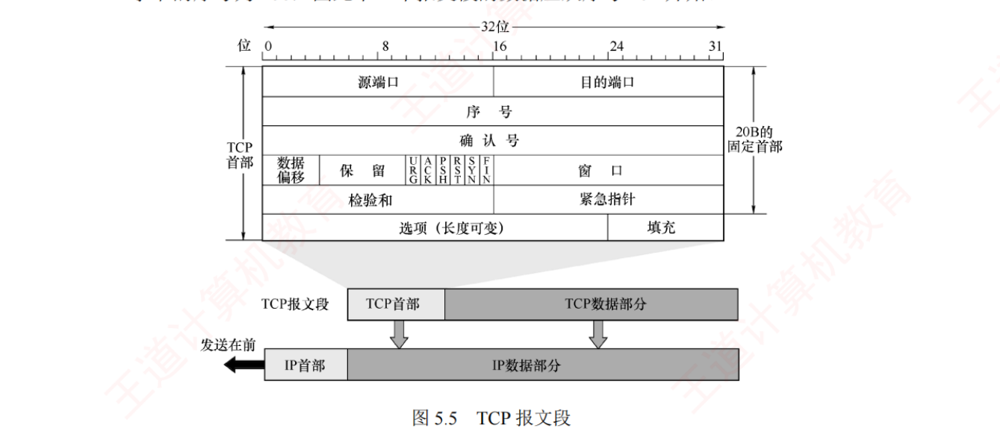
图 5.5 TCP 报文段 。每行 32 位（4B），固定首部共 5 行 = 20B ：① 源端口(2B) ｜ 目的端口(2B)；② 序号(4B) ；③ 确认号(4B) ；④ 数据偏移(4位) ｜ 保留(6位) ｜ URG ACK PSH RST SYN FIN (各 1 位) ｜ 窗口(2B)；⑤ 检验和(2B) ｜ 紧急指针(2B)；第六行是「选项(长度可变) ｜ 填充」。下方示意：TCP 报文段作为 IP 数据报的数据部分，IP 首部在前，标着「发送在前」 。⭐ 看这张图请把「哪些字段占整整一行」记住 ：只有序号和确认号各独占一行（各 4B） 这两个 4B 就是全章计算题的主角，也是十六进制解析题里最好数的两段（第 5～8 字节是序号，第 9～12 字节是确认号） 。再盯住第四行 ：它一行里挤了 4 位偏移 + 6 位保留 + 6 个控制位 + 16 位窗口 ，正好 32 位 ——2012 综合真题要判断 SYN/ACK 的值，就是去数第 13、14 两个字节 。与图 5.2 的 UDP 对照着看，差别一目了然：UDP 只有 4 个字段 8B，TCP 有 16 个字段最少 20B——多出来的全是「为了可靠」付的钱。 16 个字段速查（按图上顺序）
# 字段 长度 要点 1–2 源端口 / 目的端口 各 2B 与 UDP 相同 3 序号 seq 4B 本报文段所发数据的第一个字节 的序号 ；0～232 −1，到顶回绕到 0（模 232 ） 4 确认序号 ack 4B 期望收到对方下一个报文段的第一个字节的序号 ；ack=N ⟹ N−1 及以前全部收到 5 数据偏移 （首部长度）4 位 单位是 4B ！值 × 4 = 首部长度；最小 5（20B），最大 15（60B）6 保留 6 位 必须置 0 7 URG 紧急位1 位 =1 时紧急指针有效；紧急数据放在数据的最前面 8 ACK 确认位1 位 仅当 ACK=1 时确认序号才有效 ；连接建立后所有报文段都必须 ACK=1 9 PSH 推送位1 位 =1 时接收方立即上交应用进程 ，不等缓存填满 10 RST 复位位1 位 =1 时连接出现严重差错，必须释放后重建；也用于拒绝非法报文段或连接请求 11 SYN 同步位1 位 SYN=1 且 ACK=0 ⟹ 连接请求；SYN=1 且 ACK=1 ⟹ 连接接受 12 FIN 终止位1 位 =1 表示发送方无更多数据、请求释放连接 13 窗口 2B 单位是字节 ！本报文段发送方作为接收方 时当前还能接收的最大数据量14 检验和 2B 范围含首部 + 数据 ；计算时加 12B 伪首部 （协议号改 6、长度改 TCP 长度） 15 紧急指针 2B 仅 URG=1 时有效；即使接收窗口为零，仍可发送紧急数据 16 选项 / 填充 ≤ 40B MSS （最大报文段长度 = 数据字段 的最大长度）、窗口扩大、时间戳；填充保证首部为 4B 整数倍
陷阱 · 三个字段的「单位」，是本节最高频的暗坑
字段 单位 错法 考过 数据偏移 4B 当成字节 ⟹ 首部算成 5B 5.3 第 07 题 · 综 12 第 3 问 窗口 字节 当成「报文段个数」 5.3 第 10、29 题只考这一句 序号 / 确认序号 字节 当成「第几个报文段」 5.3 第 11 题的选项 A、B 就是这么造的
⚠️ 三个字段全都指向同一件事：TCP 是面向字节流 的，所以除了数据偏移之外，凡是计数的字段单位都是字节 。
「数据偏移以 4B 为单位」是唯一的例外，因为它数的不是数据而是首部的行数 （图 5.5 里一行正好 4B）。 我的补讲 · 六个控制位怎么记：按「一次连接的生命周期」串一遍，比死背强十倍
六个控制位分散着背很容易串，但把它们按连接的一生排一遍，顺序就自己出来了：
阶段 用到的位 典型组合 出生 （建立）SYN 第一次握手 SYN=1, ACK=0 ；第二次 SYN=1, ACK=1 一生 （传输）ACK （永远为 1）连接建立后每个 报文段都 ACK=1 加速 PSH 交互式应用要求立即上交，不等缓存满 插队 URG 紧急数据放数据区最前面，零窗口也能发 善终 （释放）FIN 第一次挥手 FIN=1；第三次挥手 FIN=1, ACK=1 横死 （异常）RST 严重差错、主机崩溃、拒绝非法连接请求
⟹ 一句话串起来：SYN 出生 → ACK 相伴一生 → PSH/URG 是两种加急 → FIN 善终 → RST 横死。
⚠️ 最容易混的一对是 URG 与 PSH（5.3 第 08 题就在这设坑） ：
URG 管的是「数据在报文段里的位置」 （紧急数据插到最前面，接收方优先处理）；
PSH 管的是「数据什么时候交给应用」 （立刻交，别攒着）。一个是空间上的插队，一个是时间上的催促。 我的补讲 · 「数据偏移」这一个字段，就是 2012 综合真题的第 3 问
2012 真题给了一串 TCP 首部的十六进制：0D 28 00 15 50 5F A9 06 00 00 00 00 70 02 40 00 C0 29 00 00
字节位置 值 字段 解读 1–2 0D 28 源端口 = 3368 （> 49151，说明是客户端 动态分配的） 3–4 00 15 目的端口 = 21 ⟹ 这是一条 FTP 控制连接 5–8 50 5F A9 06 序号 4 个字节整整一行 9–12 00 00 00 00 确认序号 = 0（还没确认过任何东西） 13 70 数据偏移（前 4 位） 7 × 4 = 28B 首部 ⟹ 有 8B 选项 14 02 控制位 SYN=1, ACK=0 ⟹ 第一次握手
⚠️ 第 13 字节的坑：0x70 的前 4 位 是 7，不是整个字节 0x70 = 112。
数据偏移只占 4 位，要先取高半字节再乘 4。
⚠️ 第 14 字节的读法：0x02 = 0000 0010，六个控制位按 URG ACK PSH RST SYN FIN 的顺序占低 6 位
⟹ 只有倒数第二位（SYN）是 1。
把这个字节的位序背熟，任何「给十六进制判状态」的题都能秒答。
顺带记住三个最常见的值：02=SYN · 12=SYN+ACK · 10=纯 ACK · 11=FIN+ACK。 我的补讲 · MSS 这个选项，是 5.4 疑难点第 1 条的引子，现在先埋个扣
书上在「选项」字段里轻描淡写地提了一句 MSS，还附了一个【注意】：与 MSS 类似，数据链路层的 MTU 指的是帧中数据部分的最大长度 。
这句话是全 408 里最容易混的一对术语，务必现在就分清：
MSS MTU 属于哪层 传输层 （TCP 选项）数据链路层 指的是什么 TCP 报文段中数据字段 的最大长度 帧中数据部分 的最大长度 典型值 默认 536B 以太网 1500B 关系 MSS = MTU − IP 首部 20B − TCP 首部 20B = 1500 − 40 = 1460B （以太网上的典型值）
⚠️ 两个都只算「数据部分」，都不含自己那一层的首部——这是它们唯一的共同点，也是最容易记反的地方。
⚠️ 另一个必记的细节：MSS 是在三次握手时协商 的（5.3 第 12 题）——
双方各把自己能接受的 MSS 写进 SYN 报文段的选项字段，然后取两者中较小的那个 。
这也解释了为什么 SYN 报文段的首部往往不是 20B 而是 24B 或 28B：它带了选项。 知识串联 · TCP 首部与 IP 首部并排看，能一次记住两张图
首部对照 ch4 的 IP 首部和本节的 TCP 首部，长得非常像——都是每行 32 位、固定 20B、可选 40B、最大 60B ：
IP 首部（ch4） TCP 首部（本节） 固定长度 20B 20B 长度字段 首部长度 （4 位，单位 4B ）数据偏移 （4 位，单位 4B ）最大长度 60B 60B 校验范围 只有首部 首部 + 数据 + 伪首部 分组标识 标识 + 标志 + 片偏移 序号 + 确认号
⟹ 两张图有三处完全一样（20B / 4 位长度字段 / 单位 4B），一处根本不同（校验范围）。
把「一样的三处」合起来记，只剩「校验范围」这一条要单独记。
十六进制解析 ch4 说「IP 数据报总是从 45 开始」（版本 4 + 首部长度 5） ；
本章对应的是「TCP 段的第 13 字节高半字节通常是 5 或 7」 ——
同一种读法，换一个首部。
2012 综合真题就是把两张首部拼在一起考的：先数 IP 的 20B，再数 TCP 的 20B。 知识串联 · 伪首部：UDP 和 TCP 用的是同一张图，只差两个字
检验和 TCP 的伪首部与 UDP 的伪首部完全一样（12B = 源 IP 4 + 目的 IP 4 + 全 0 1 + 协议号 1 + 长度 2），
只需把协议字段由 17 改成 6 、把「UDP 长度」改成「TCP 长度」 。⟹ 5.2.2 的图 5.4 你看懂了，本节的检验和就一个字都不用再学。
5.3 第 07 题（关于 TCP 伪首部的错误说法）考的正是「17 代表 UDP、6 代表 TCP」这一句。 协议号 回到 ch4 的 IP 首部「协议」字段：1 = ICMP · 6 = TCP · 17 = UDP · 89 = OSPF
——四个数字在三章里各考一次，是 408 里性价比最高的四个数字之一。
知识串联 · 「PSH 立即上交」与 OS 的缓冲区是同一件事
缓存 PSH 位解决的问题是：TCP 为了效率会把数据攒在缓存里，攒够了才交给应用 ，
但交互式应用（比如 TELNET 敲一个字符）等不起。 这与《操作系统》5.4 的缓冲区管理是同一个矛盾 ：
OS 的单缓冲/双缓冲也是「攒一批再处理」，攒得越多吞吐越高、但单次时延越长。
⟹ 凡是「攒批」的设计，都在吞吐与时延之间做同一笔交易；PSH 就是给这笔交易开的后门。 全双工的两套缓存 5.3.1 第 4 条说「连接两端均设有发送缓存和接收缓存」 ——
一条 TCP 连接一共有四个 缓存 ，这是 5.3.5 流量控制的物质基础 ：
rwnd 通告的正是「我的接收缓存还剩多少」，2016 综合真题的「缓存只进不出」说的就是它。
背景 · 考试不碰：保留字段与「填充」
首部里的保留（6 位） 和填充 两个字段，书上各给了一句话：保留为今后使用、目前须置 0；填充用于确保整个首部长度为 4B 的整数倍 。
这两个字段本身从不单独出题 ，快速划过即可。但「填充保证首部为 4B 整数倍」这个结论会以另一种形式出现 ：
5.3 第 07 题的选项 C 说「TCP 首部长度总是 4B 的倍数」——这是对的 ，理由正是有填充在兜底。
⟹ 记住结论（首部长度 ∈ {20, 24, 28, …, 60}），不必记它是靠哪个字段实现的。
我的补讲 · ACK 位的使用规则有个「例外中的例外」，选择题专挑这里
书上说 X ：
TCP 规定，在连接建立后，所有传送的报文段都必须将 ACK 置为 1 。
潜台词是 Y ：
这条规矩有一个、而且只有一个例外——第一次握手 。
因为那一刻「连接还没建立」，而且客户还没收到过任何东西，无从确认。
所以书上在图 5.6 下面专门写了一条【注意】：仅在第一次握手的报文段中 ACK=0 。
所以能考 Z（一串判断题） ：
报文段 ACK SYN FIN 第一次握手 0 1 0 第二次握手 1 1 0 第三次握手 / 数据段 1 0 0 第一次挥手 1 0 1 第二次挥手 1 0 0 第三次挥手 1 0 1 第四次挥手 1 0 0
⟹ 整张表只有一个 0 在 ACK 列（第一次握手），两个 1 在 SYN 列（前两次握手），两个 1 在 FIN 列（第一、三次挥手）。
这三句话就是 2012 综合真题「判断哪三个分组完成了握手」的全部依据。 我的补讲 · 序号「模 2³² 回绕」——一个平时不用、真题却考过两次的细节
书上说 X ：序号占 4B，范围 0～2
32 −1，
达到 232 −1 后回绕到 0，即采用模 232 运算 。
潜台词是 Y ：
序号空间是有限 的，跑得够快就会绕回来；一旦绕回，网络中可能同时存在两个序号相同的报文段 ，接收方就分不清了。
所以能考 Z（两道题，一正一反） ：
题 问法 算法 答案 第 15 题 40Gb/s 线路上，序号最多能撑多久不重复？ 先 ÷8 换成字节率 ：40Gb/s = 5×109 B/s；232 ÷ 5×109 0.859s = 859ms 综 09 要在 MSL=120s 内不绕回，线路最快能到多少？ 232 ÷120 = 35791394B/s 载荷 ⟹ 每 1500B 载荷实发 1566B ≈ 299Mb/s
⚠️ 两题共用一个单位坑：序号是按字节 编号的，线路速率是比特 /秒，必须先 ÷8 。
忘了除，第 15 题会算成 107ms（正好也是个「像样」的数）。
⚠️ 综 09 还多一个坑：以太网开销要算满 26B （18 首尾 + 7 前同步码 + 1 SFD），不是 18B。 📄 p.238
5.3.3 TCP 连接管理
每条 TCP 连接包含三个阶段：连接建立、数据传送、连接释放 。连接建立要解决三个问题：① 使双方确知对方存在；② 允许双方协商参数 （最大窗口值、窗口扩大选项、时间戳选项等）；③ 为传输实体分配资源 （缓存空间、连接表项等）。
必记 · TCP 连接的端点是套接字，不是主机也不是端口
「每条 TCP 连接有两个端点，这些端点既不是主机、IP 地址，也不是应用进程或传输层端口，而是套接字 。一条 TCP 连接由通信双方的两个套接字唯一确定。」 同一个 IP 地址可以参与多个 TCP 连接，同一个端口号也可以出现在多个不同的 TCP 连接中。
⟹ 判断两条连接是否相同，看的是四元组 （源 IP、源端口、目的 IP、目的端口），有一个不同就是两条连接。 连接建立采用客户/服务器模式 ：主动发起的叫客户，被动等待的叫服务器 。
1. 连接建立：三次握手
考点追踪：TCP 三次握手的字段解析（2011、2012、2016、2019、2023）—— 五个年份，全章最多
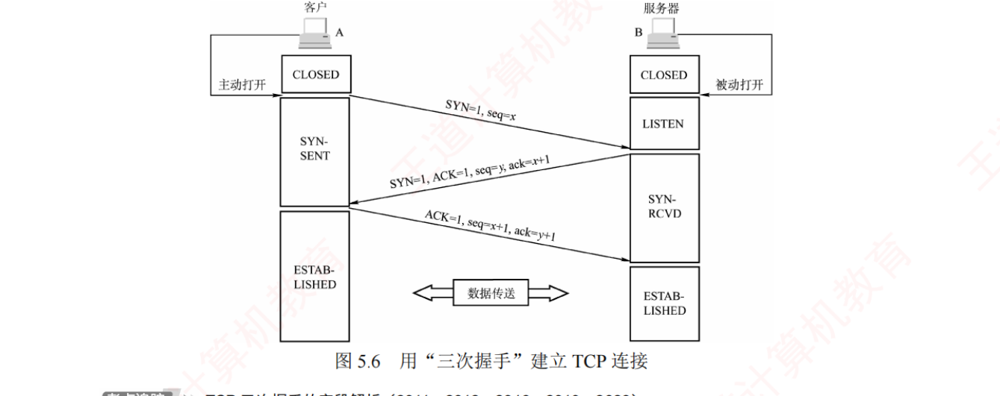
图 5.6 用「三次握手」建立 TCP 连接 。左列客户 A ：CLOSED（主动打开）→ SYN-SENT → ESTABLISHED；右列服务器 B ：CLOSED（被动打开）→ LISTEN → SYN-RCVD → ESTABLISHED。三条斜箭头依次是 SYN=1, seq=x ／ SYN=1, ACK=1, seq=y, ack=x+1 ／ ACK=1, seq=x+1, ack=y+1，其后才是「数据传送」双向箭头。⭐ 看这张图请数三样东西 ：① SYN 只出现在前两条 ；② ACK=0 只出现在第一条 （因为此时还没收到过任何东西）；③ x 和 y 毫无关系 ——y 是 B 自己随便选的 。2011 真题（第 44 题）考的就是第 ③ 点：乙的 seq 由它自选、可为任意值，四个选项里只有确认序号 ack=11221 是被约束死的。 另注意 B 那一列多出来的 LISTEN 状态 ：它是服务器在收到任何请求之前 就进入的状态 ，而客户端一侧没有这个状态 ——这是「谁是客户、谁是服务器」在状态图上的唯一区别。
次 方向 字段 状态变化 关键规矩 1 A → B SYN=1, seq=x （ACK=0）A 进入 SYN-SENT 不能携带数据，但消耗 1 个序号 2 B → A SYN=1, ACK=1, seq=y, ack=x+1 B 进入 SYN-RCVD 同样不能携带数据，同样消耗 1 个序号 ；y 由 B 自选 3 A → B ACK=1, seq=x+1, ack=y+1 A 进入 ESTABLISHED （B 收到后也进入） 可以携带数据；若不携带则不消耗序号
陷阱 · 「消耗序号」这三个字，是本节所有序号计算题的总闸门
报文段 能否带数据 是否消耗序号 SYN 报文段 不能 消耗 1 个 ✓ FIN 报文段 协议不禁止，但主流 OS 不允许 消耗 1 个 ✓ 纯 ACK （第三次握手不带数据时）— 不消耗 ✗
⟹ 由此得到本章最好用的一条推论：已发送的应用层数据量 = FIN 的 seq − (SYN 的 seq + 1) 。
2020 真题（第 53 题）：SYN 的 seq=1000，FIN 的 seq=5001，问已发送多少字节？
数据起始序号 = 1000 + 1 = 1001 （SYN 吃掉了 1000 这个号）
数据最后字节 = 5001 − 1 = 5000 （FIN 占用了 5001 这个号）
已发送字节数 = 5000 − 1001 + 1 = 4000B 🐍 已复算
⚠️ 两头各减 1，一头都不能忘——只算对一头会得到 4001 或 3999，两个都在选项里。
另一道同族题（5.3 第 21 题）：SYN 的 seq=211、第四次挥手的 seq=985 ⟹ 数据序号 212～984 ⟹ 共 984−212 = 772B 。 我的补讲 · 三次握手最爱考的不是流程，是「第三次握手的两个数怎么来的」
流程谁都会背，但一到具体数字就翻车。第三次握手的 seq=x+1, ack=y+1 两个数，来源完全不同：
数 怎么来的 取决于谁 seq = x+1 A 自己的 SYN 消耗了序号 x，所以 A 的下一个序号是 x+1 A 自己 ack = y+1 B 的 SYN 消耗了序号 y，A 期望 B 下次从 y+1 开始 B 的初始序号
2019 真题（第 51 题）：甲发 SYN(seq=2018)，乙回 SYN+ACK(seq=2046, ack=2019)，问甲第三次握手的确认序号？
答案 2047 = 乙的初始序号 2046 + 1 ，跟甲自己的 2018 一点关系都没有。
选错的人多半盯着 2018 算，得到 2019 或 2020。
⟹ 记住一句总纲：同一个报文段里的 seq 和 ack 毫无关系 ——
seq 说的是「我发到哪了」，ack 说的是「我收到你哪了」，两句话各说各的。
5.3 第 22 题就是专门考这一句的：给 A 发向 B 的报文 seq=201/ack=200，问 B 捎带确认时填什么
⟹ B 的 seq = A 的 ack = 201 （B 确实该从这发）、B 的 ack = 200 + 2 = 202 （A 那个 2B 数据收到了）。 我的补讲 · 三次握手的两个时间量，是所有「最早/最少时间」题的地基
从客户发出第一个 SYN 那一刻起算：客户最早可在 1RTT 后发送数据，服务器最早在 1.5RTT 后才能发送数据。
t=0 A ──SYN──────────────→ B (0.5RTT 后 B 收到)
t=0.5RTT B ──SYN+ACK──────────→ A (1RTT 后 A 收到)
t=1RTT A 可以发数据了 ← 第三次握手能捎带数据，所以 A 是 1RTT
t=1.5RTT B 收到第三次握手，此时 B 才能发 ← 所以 B 是 1.5RTT
这两个数在 2025 真题（第 61 题）里被直接换算成了毫秒：
协议 过程 耗时 RTT=8ms 时 UDP 客户发请求 → 服务器直接应答 1RTT 8ms TCP SYN → SYN+ACK → ACK 捎带请求 （1.5RTT 服务器收到）→ 应答回来（+0.5RTT） 2RTT 16ms
⚠️ 这道题的胜负手是「第三次握手能捎带应用请求」 ——
若以为要等连接完全建立好再单独发一次请求，会算成 2.5RTT = 20ms（不在选项里，但同族题会给）。
⟹ 一句话记牢：三次握手的第三条是「一条能干活的握手」 ，它既是确认又能带数据，TCP 的 1RTT 就省在这。 2. 连接释放：四次挥手
考点追踪：TCP 四次挥手的字段解析（2020、2023）· 四次挥手状态变化（2021）· TCP 连接释放的时间分析（2016、2022、2024）
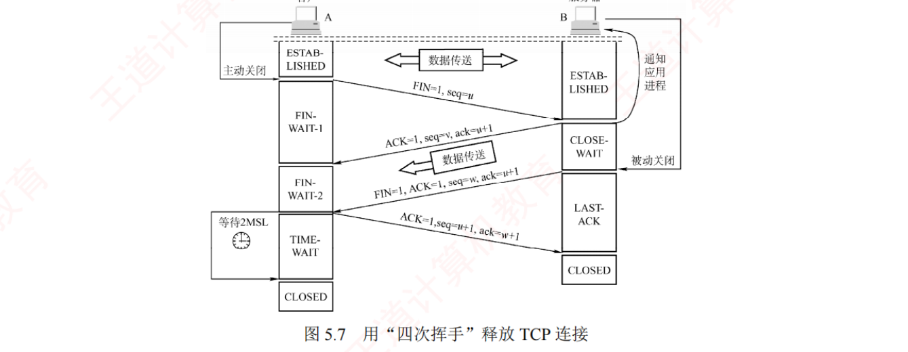
图 5.7 用「四次挥手」释放 TCP 连接 。左列客户 A ：ESTABLISHED（主动关闭）→ FIN-WAIT-1 → FIN-WAIT-2 → TIME-WAIT（等待 2MSL） → CLOSED；右列服务器 B ：ESTABLISHED（通知应用进程）→ CLOSE-WAIT（被动关闭） → LAST-ACK → CLOSED。四条报文依次 FIN=1, seq=u ／ ACK=1, seq=v, ack=u+1 ／ FIN=1, ACK=1, seq=w, ack=u+1 ／ ACK=1, seq=u+1, ack=w+1。⭐ 看这张图最该盯的是第二条与第三条之间那段「数据传送」箭头 ：它是从 B 到 A 的单向箭头 ——这就是「半关闭」的图证：A 关掉了自己的发送方向，B 却还能继续发 。也正因为这段可能又发了数据，第三条的 seq=w 可能大于第二条的 seq=v（5.3 第 24 题考的就是这个 w）。 另盯住 A 那一列最下面的 2MSL 方框 ：它是全图唯一一段「什么也不干、就是等」的时间 ，2022 真题（第 58 题）的 1650ms 里，1600ms 都花在这个方框里。
次 方向 字段 状态变化 关键点 1 A → B FIN=1, seq=u A → FIN-WAIT-1 u = 此前已发数据的最后字节 + 1；FIN 消耗 1 个序号 2 B → A ACK=1, seq=v, ack=u+1 B → CLOSE-WAIT ；A → FIN-WAIT-2 此时进入半关闭：A→B 方向已释放，B→A 方向没有 3 B → A FIN=1, ACK=1, seq=w, ack=u+1 B → LAST-ACK w 可能 > v （半关闭期间 B 又发了数据）；ack 重复上一次的 u+14 A → B ACK=1, seq=u+1, ack=w+1 A → TIME-WAIT （等 2MSL）→ CLOSED；B 收到即 CLOSED B 先关，A 后关 ——A 还要多等 2MSL
必记 · 为什么要等 2MSL（两个目的，缺一不可）
① 确保客户发送的最后一个 ACK 能够到达服务器。
若这个 ACK 丢了，服务器会超时重发 FIN，客户还在 TIME-WAIT 里，能再补一个 ACK；若客户直接关掉，服务器就永远等不到确认。 ② 使本连接中所有可能滞留的旧报文段 从网络中自然消失，避免影响新连接。
MSL 是「最长报文段寿命」，等 2MSL 之后，这条连接产生的任何迟到报文都已经死透了。 ⟹ 第 ② 条与 5.4 疑难点第 5 条（为什么初始序号不能固定）是同一个担忧的两种解法：
一个靠「等到旧报文死光」，一个靠「换个序号让旧报文对不上号」。
我的补讲 · 四个时间量：本章所有「最短时间」题都从这四个数里出
问的是 答案 为什么 考过 客户最早何时能发数据 1RTT 第三次握手可捎带数据 2025 第 61 题 服务器最早何时能发数据 1.5RTT 要等第三次握手到达 2024 第 59 题 客户 释放连接最短1RTT + 2MSL 1RTT 走完四次挥手的前三条 + 自己等 2MSL 2022 第 58 题 服务器 释放连接最短1.5RTT 还要多半个 RTT 等最后那个 ACK 到达 2016 综 · 第 26 题 · 2022 第 58 题
⚠️⚠️ 四个数里最反直觉的是最后两行：先说「我要关」的那个人（客户），反而是后 关掉的那个 。
服务器收到最后一个 ACK 就 CLOSED 了，客户还要在 TIME-WAIT 里干等 2MSL。
2022 真题（第 58 题）把这两行放在一道题里同时问，RTT=50ms、MSL=800ms：
客户 C：0ms 发 FIN → 50ms(1RTT) 收到 S 的 ACK+FIN → 发 ACK 并启动 2MSL
C 进入 CLOSED 至少需 50 + 2×800 = 1650ms
服务器 S：C 的最后那个 ACK 在 1.5RTT = 75ms 到达 S
S 进入 CLOSED 至少需 75ms 🐍 已复算
⟹ 1650ms vs 75ms，差了二十多倍——「谁先关」这个问题的答案永远是「被动关闭方先关」。 我的补讲 · 「最短时间」四个字的唯一含义：让服务器跳过 CLOSE-WAIT
四次挥手为什么是「四次」而不是「三次」？因为第 2 条（ACK）和第 3 条（FIN）之间，服务器可能还有数据要发，所以拆成了两条。
但题目一旦写「最短 / 最少时间」，就等于告诉你：服务器没有数据要发了 ⟹ ACK 与 FIN 合并成一条发出 ⟹ CLOSE-WAIT 状态被跳过 ，四次挥手退化成三次。
常规四次挥手：FIN → ACK →（B 继续发数据）→ FIN+ACK → ACK
「最短」时的挥手：FIN → ACK+FIN（合并！）→ ACK ⟹ 只用 1.5RTT 走完
这一条在三道题里连续出现，是本章复现次数最多的一个套路：
题 问法 答案 5.3 第 26 题 服务器释放连接的最短时间 1.5RTT 2022 第 58 题 C 和 S 各自进入 CLOSED 的最少时间 1650ms / 75ms 2016 综 14 第 4 问 S 释放连接的最短时间（RTT=200ms） 1.5 × 200 = 300ms
⟹ 见到「最短/最少」就在草稿上先写一行「S 无数据 ⟹ ACK 与 FIN 合并 ⟹ 跳过 CLOSE-WAIT」，再开始数 RTT。 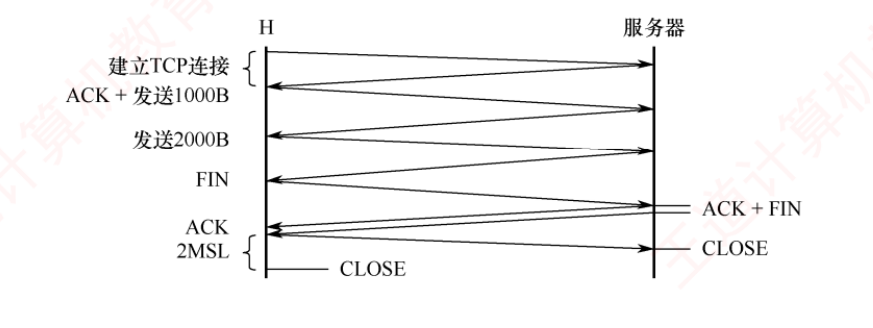
2024 统考真题（本章第 59 题）的完整时序图 ——一张图把「握手 + 数据 + 挥手」的最少时间全串起来了，是本节最好的总复习 。纵向依次：「建立 TCP 连接」（前两次握手，1RTT ）→「ACK + 发送 1000B 」（第三次握手捎带数据 ）→「发送 2000B」（此时 cwnd 已翻倍）→「FIN」→ 服务器侧「ACK + FIN 」（合并！）→「ACK」→「2MSL 」→ 两侧同时 CLOSE 。⭐ 这张图值钱在它把本节四个考点按顺序排成了一条线 ：① 前两次握手 1RTT；② 第三次握手捎带 1000B；③ 收到确认后 cwnd 由 1000B 涨到 2000B，第 3 个 RTT 发完剩下的 2000B；④ 第 4 个 RTT 走「最短挥手」，末尾再加 2MSL 。总时间 = 4RTT + 2MSL = 40ms + 60s = 60.04s 。⚠️ 注意 2MSL 是 60 秒而 RTT 只有 10 毫秒——量级差了三千倍，所以答案几乎就等于 2MSL 本身。 见到这类题先看 MSL 的量级：只要 MSL 是「秒」级，前面那几个 RTT 基本只影响小数点后两位。 我的补讲 · 2024 真题（第 59 题）逐步拆解：它是「握手 + cwnd + 挥手」的三合一
题干 ：H 与服务器建 TCP 连接后发送 3000B 数据，MSS=1000B，初始 cwnd=1000B，RTT=10ms，MSL=30s，求从发起连接到 H 进入 CLOSED 的最少时间。
阶段 耗时 发生了什么 累计 前两次握手 1RTT SYN → SYN+ACK 10ms 第 2 个 RTT 1RTT 第三次握手捎带 1000B （cwnd=1000B）20ms 第 3 个 RTT 1RTT 收到确认后 cwnd 翻倍到 2000B ，发完剩下的 2000B30ms 第 4 个 RTT 1RTT 最短挥手 ：FIN → ACK+FIN → ACK40ms 2MSL 60s TIME-WAIT 干等 60.04s
这道题有三个「不知道就做不出来」的点，缺一个就错：
① 第三次握手能捎带数据 （否则多算 1RTT）；
② 慢开始下 cwnd 在收到确认后 才翻倍 （否则会以为第 2 个 RTT 就能发 2000B）；
③ 最少时间 ⟹ 服务器把 ACK 与 FIN 合并 （否则挥手要 1.5RTT 起）。
⟹ 本题是全章串联度最高的选择题，做错它说明连接管理与拥塞控制至少有一块没打通。 必记 · 保活计时器（考得少，但一句话就能记住）
为防客户突发故障导致服务器长期无效等待，TCP 设有保活计时器 ：
服务器每收到一次数据就重置它；若超时仍未收到数据，则每隔 75 秒 发送一个探测报文段；连续 10 次 无响应即判定客户故障并关闭连接。 把 TCP 的四个计时器 一起记住：① 重传计时器（RTO）· ② 持续计时器（零窗口探测）· ③ 保活计时器（75s × 10）· ④ 时间等待计时器（2MSL） 。
四个计时器各管一件事：重传管丢包、持续管死锁、保活管对方失联、时间等待管旧报文——一个都不重复。
知识串联 · 三次握手 vs ch3 的链路建立：为什么链路层不需要「握手」
连接的代价 ch3 的数据链路层协议（PPP、以太网）都不建立连接 ，直接开发；本章却要花 1.5RTT 握三次手。差别来自「距离」 ：
链路层只跨一段线，两端物理上就连着，不存在「对方在不在」的疑问；传输层要跨整个互联网，对方可能早已关机 。⟹ 三次握手要解决的三个问题（确知存在 / 协商参数 / 分配资源），在链路层全都不存在或已被硬件解决。 为什么不是两次 5.4 疑难点第 4 条给了答案：防止已失效的连接请求突然到达服务器 。
两次握手时，B 收到旧 SYN 就以为连上了、白白占资源等数据；三次握手时，B 发的 SYN-ACK 会被 A 直接丢弃（A 发现确认序号对不上），连接建不起来。
⟹ 第三次握手的本质作用是：让 A 有机会说「这不是我要的连接」 。
知识串联 · TIME-WAIT 的 2MSL，和 OS 的「资源回收延迟」是同一类设计
延迟回收 TIME-WAIT 里那 2MSL，本质是「资源已经不用了，但先别急着还」 ——
与《操作系统》里进程退出后仍保留 PCB 等待父进程 wait（僵尸进程）、文件删除后 inode 延迟释放，是同一种设计 ：
留一段安全期，防止「资源被立刻复用」引发的错乱。 代价 这个设计不是白拿的 ：高并发服务器上会堆积大量 TIME-WAIT 状态的连接，占着四元组不能复用 ——
这也是为什么工程上主动关闭方通常尽量选客户端而不是服务器。 回扣 ch4 「让旧报文自然消失」这个思路，在 ch4 也出现过一次：IP 首部的 TTL ——
TTL 保证任何 IP 分组不会在网络中无限打转，MSL 才有意义。
两者是配套的：TTL 决定报文最长能活多久，MSL 就取那个上界。
我的补讲 · 半关闭：四次挥手里唯一一个「反直觉」的状态，选择题连考三次
书上说 X ：
TCP 是全双工的，可视为连接包含两条独立的数据通路；发送 FIN 的一端关闭了其发送方向，但对方仍可继续发送数据 。
潜台词是 Y ：
FIN 说的不是「我们断了」，而是「我说完了 」 ——
它是一个单方向的声明，不是双方的协议。
正因为如此，四次挥手才不能压缩成两次：B 说「我知道了」和 B 说「我也说完了」是两件事，可能隔着很长时间。
所以能考 Z（三题连坐） ：
题 问法 答案的落点 第 23 题 发了 FIN 之后还能不能收到数据？ 能 ——关闭一个方向后，对方还可以继续发第 24 题 服务器 FIN 报文段 B 的 seq 是多少？ y+k （半关闭期间又发了 k 字节）；ack 一定是 x+1 图 5.7 第三次挥手的 seq=w 与第二次的 seq=v 关系？ w 可能 > v
⟹ 三题问的是同一件事：「第二次挥手到第三次挥手之间，B 还能发多少数据」 。
常规情况下答案是「不确定」（所以 seq 只能写成 w 或 y+k）；只有在题干写「最短时间」时，这段才被压成 0 （B 无数据可发，ACK 与 FIN 合并）。 我的补讲 · 四次挥手的状态机：七个状态，只要记住「谁多了哪一个」
挥手涉及七个状态，硬背极易串。按「主动 vs 被动」分成两列，规律立刻出来：
主动关闭方（客户） 被动关闭方（服务器） 发 FIN 后 FIN-WAIT-1 — 收到对方 ACK 后 FIN-WAIT-2 — 收到对方 FIN 后 — CLOSE-WAIT （可继续发数据）发出自己的 FIN 后 — LAST-ACK 发出最后的 ACK 后 TIME-WAIT（等 2MSL） — 结束 CLOSED（2MSL 之后 ） CLOSED（收到 ACK 立即 ）
记法：主动方有「两个 WAIT-1/2 + 一个 TIME-WAIT」共三个专属状态；被动方有「CLOSE-WAIT + LAST-ACK」两个。
2021 真题（第 54 题）：客户收到服务器 FIN 并发出 ACK 后处于什么状态？TIME-WAIT （不是 CLOSED——还要再等 2MSL）。
这道题的干扰项就是 CLOSED 和 FIN-WAIT-2，都在这张表的相邻格子里。 知识串联 · 「三次握手」的思想，在 408 里还有两个远房亲戚
协商与确认 三次握手的内核是：一次交换不足以让双方都确信 对方收到了自己的消息 ——
A 发完不知道 B 收没收到；B 回完不知道 A 收没收到自己的回复；只有第三条到达，双方才都确信 。 这是分布式系统里著名的「两军问题」——理论上无法在不可靠信道上达成完全确定的共识，三次握手是工程上的妥协。 ch4 的 DHCP 四步 DHCP 的 DISCOVER → OFFER → REQUEST → ACK，也是同一种「提议—回应—确认」结构 ，
只是它多一步，因为可能有多台 DHCP 服务器同时 OFFER，客户要公开宣布选了谁。 ch3 的链路建立 PPP 的 LCP 链路协商同样是「你提议、我应答」 ——
⟹ 凡是要「协商参数 + 确认对方在线」的场合，协议长得都差不多；本章的特殊之处只在于它还要同步序号 （SYN = Synchronize）。
「SYN」这个名字本身就说明了三次握手的第一职责：同步双方的初始序号 。
📄 p.240
5.3.4 TCP 可靠传输
考点追踪：TCP 序号与确认机制（2011、2012、2013、2025）· 快重传算法的原理（2019）
TCP 通过检验、序号、确认和重传 四种机制，确保接收方从缓存中读取的字节流与发送方发出的字节流完全一致 。（检验机制与 UDP 类似，不再赘述。）
1. 序号
TCP 把数据视为一个无结构但有序的字节流，序号是对字节流中的每个字节 依次编号，而非对报文段整体编号。 序号字段值指明本报文段所发送的第一个数据字节 的序号。
图 5.8 A 的发送缓存区中的数据划分成 TCP 段 。A 的发送缓存里有 10B 数据，序号从 0 编到 9；第一个报文段装 0～2 号字节 ⟹ seq=0 ；第二个 ⟹ seq=3 ；第三个 ⟹ seq=6 ；第四个 ⟹ seq=8 。⭐ 这张图只有十个小格子，却把 TCP 最反直觉的一点画死了：四个报文段的长度分别是 3、3、2、2，各不相同 ——因为「一个报文段装几个字节」是 TCP 自己决定的，与应用层调用了几次 send 无关 。看图时把「格子 = 字节」而不是「格子 = 报文段」这个观念钉死 ，后面所有序号题都建立在这上面 。另注意 seq 的值就是每段左边界格子的编号（0/3/6/8），不是段的序号（1/2/3/4） ——5.3 第 11 题的错误选项 A、B 正是把这两者搞混造出来的。
2. 确认
确认序号 = 期望收到对方下一个报文段的第一个数据字节的序号 = 已连续收全的最后一个字节 + 1。 TCP 默认使用累积确认 ，确认序号是第一个未收到字节的序号 。接收方可以在合适时机发送确认，也可以在有数据要发时捎带确认 。
必记 · 图 5.8 的两个确认例子，把「累积确认」讲得比定义清楚
B 收到了 B 回的确认序号 为什么 第 1、2 个报文段（0～5 号字节） 6 连续收全到 5 号，期望下一个是 6 第 1、3 个报文段 （0～2 和 6～7 号）3 3～5 号没收到 ⟹ 卡在 3，哪怕 6、7 已经躺在缓存里也没用
⟹ 第二行是累积确认的全部精髓：确认序号只能指向「第一个空洞」，后面收了多少都不算数 。
5.3 第 30 题（乙只收到第 1、3 段，第 3 段 seq=1000、第 2 段长 300B，问确认序号）
⟹ 第 2 段的 seq = 1000 − 300 = 700 ，答案就是 700。
⚠️ 注意是减第 2 段的长度，不是减第 3 段自己的长度——这是本题唯一的坑。 3. 重传：两种触发事件
① 超时
每发一个报文段就设一个超时计时器 ，到期未收到确认就重传。RTT ＝报文段发出到收到确认的时间差；TCP 维护加权平均往返时间 RTTS ，用自适应算法动态调整。RTO 应略大于 RTTS ，但也不能大太多 ——大了则丢包时反应迟钝，时延增大。
② 冗余 ACK
超时周期往往太长 ，所以还有一条更快的路。每当比期望序号大的失序 报文段到达时，立即发一个冗余 ACK ，指明下一个期待字节的序号。收到对同一报文段的 3 个冗余 ACK ⟹ 判定其后那个报文段已丢失，立即重传 ——这就是快速重传 。
陷阱 · 「3 个冗余 ACK」与「4 个确认」是同一件事的两种数法，2019 真题就杀在这
书上的【注意】原话 ：
对 1 号报文段的正常确认不能称为冗余 ACK ，只有在收到失序的 3、4、5 号报文段后发回的确认才叫冗余 ACK。
也就是说，触发快重传时，发送方共收到 4 个对 1 号报文段的确认 。
A 发出 1,2,3,4,5 号段，其中 2 号丢失：
B 收到 1 号 → 回 ack=2 ← ① 这是【正常确认】，不算冗余
B 收到 3 号 → 回 ack=2 ← ② 冗余 ACK 第 1 个（3 号失序）
B 收到 4 号 → 回 ack=2 ← ③ 冗余 ACK 第 2 个
B 收到 5 号 → 回 ack=2 ← ④ 冗余 ACK 第 3 个 ⟹ 此刻触发快重传
⟹ A 一共收到 4 个 ack=2
2019 真题（第 50 题）：t₀ 首次收到 ack_seq=100，t₁、t₂、t₃ 又连续收到三个相同的 ack_seq=100，问何时快速重传？
答案 C：t₃ ——
t₀ 那个是正常确认不计数，t₁/t₂/t₃ 才是三个冗余 ACK。
⚠️ 本题最强的干扰项是 t₄（超时重传时刻） ：
题干已写明「若 TCP 支持快速重传」，就不必等到超时。
把「3 个冗余 = 4 个确认」这句话写在草稿纸上，数的时候从第二个开始数。 我的补讲 · 序号题的通用四步法，五道真题一个模板走完
本节的序号/确认序号题看起来花样很多，其实全是一个模板：
第 1 步 把每段的【序号区间】写出来： [seq, seq + 数据长度 − 1]
第 2 步 找出接收方【连续收全】到了哪个字节
第 3 步 确认序号 = 那个字节 + 1（＝第一个空洞的序号）
第 4 步 若问「下一段的 seq」：= 上一段 seq + 上一段数据长度（SYN/FIN 另加 1）
五道真题套模板（🐍 全部已复算）：
题 已知 套模板 答案 2009 第 41 题段1 seq=200 长 300；段2 seq=500 长 500 区间 200～499、500～999，全收 ack=1000 2011 第 45 题第 3 段 seq=900，第 2 段长 400，只收到 1、3 段 第 2 段 = 900−400 = 500，空洞在 500 ack=500 2013 第 46 题乙发 seq=1913 长 100、ack=2046 乙覆盖 1913～2012；甲下次 seq=2046、ack=2013 seq=2046, ack=2013 第 28 题 A 初始序号 1666，第三次握手不带数据，之后发 1000B 数据 1667～2666 ack=2667 综 03 seq 从 10010 起，每段 1000B，共 3200B 10010 / 11010 / 12010（末段 1200B） 三段序号如左
⚠️ 第 4 步里那句「SYN/FIN 另加 1」是唯一需要额外记的地方，其余四步纯属数轴上的加减。
把区间画在草稿纸的一条数轴上，比在脑子里算快得多、也不会错。 我的补讲 · 综 01 那道「不用算的题」，讲清了累积确认为什么值钱
题干 ：为什么发送方在某个报文段超时之前，可能就不需要重传它了？
答案 ：因为
发送方可能还没重传，就收到了对更高序号的确认 。
A 发 (seq=92, 8B) 和 (seq=100, 20B)，都正确到达 B
B 回 ack=100 和 ack=120，其中 ack=100 在路上丢了
A 在第一个段超时前收到了 ack=120
⟹ A 立刻知道：119 号及以前全被 B 收到了 ⟹ 不必重传第一个段
这道题真正在讲的是「累积确认的容错性」 ：
丢一个确认没关系，后面任何一个更大的确认都能把它顶掉。
⟹ 对照 ch3 3.4 就更清楚了 ：
GBN 的累积确认也有这个性质，而停止-等待协议没有 （它一次只在途一个帧，丢一个确认就必须等超时重传） 。
这就是「批量 + 累积确认」相对停等的第二个好处——第一个是提高信道利用率，第二个就是确认本身也变得可容错 。 我的补讲 · TCP 到底是 GBN 还是 SR？这道 5.4 疑难点值一道选择题
表面看 TCP 用累积确认，像 GBN；但关键差别在接收方的动作：
GBN（ch3） SR（ch3） TCP（本章） 失序帧/段 丢弃 缓存 缓存 ✓ （像 SR）确认方式 累积确认 逐个确认 累积确认 ✓ （像 GBN）丢一个要重传几个 从第 k 个起全部 只重传第 k 个 只重传第 k 个 ✓ （像 SR）
⟹ 结论：TCP 是 GBN 与 SR 的混合体 ——累积确认取自 GBN，接收方缓存与单点重传取自 SR。
再加上 SACK（选择确认）选项 ：启用后接收方能明确告知哪些非连续数据块已收到，使重传行为更接近 SR 。
这个混合体的设计动机很朴素 ：
累积确认便宜（一个数字表达全部进度），接收方缓存不浪费（已经收到的东西没理由扔掉） ——
TCP 把两边的好处都拿走了，代价只是「接收方要多花点缓存」（5.3 综 02 的答案就是这句话）。 知识串联 · 本节是 ch3 3.4 的「加强版重播」，两章必须并排复习
滑动窗口 ch3 3.4 的三个协议（停止-等待 / GBN / SR）在本节全部再现 ：
停止-等待的「超时重传」→ 本节的 RTO；GBN 的「累积确认」→ 本节的确认序号；SR 的「接收方缓存」→ 本节的失序缓存。 ⟹ 三个协议里 TCP 一个都没照抄，它取了 GBN 的确认 + SR 的缓存。 窗口大小 ⚠️ 但有一处 ch3 与本章根本不同 ，是选择题的固定考点 ：
ch3 链路层的滑动窗口大小一般是固定值 （由序号位数决定，如 GBN 的 2n −1）；
本章传输层的窗口动态变化 （由接收方缓存与网络拥塞共同决定）。 差错检测 ch3 的 CRC 与本章的检验和，检错能力差得远 ：
CRC 是强检错码，检验和只是「计算简单、处理速度快」的弱检错 ——
书上原话「这种差错检验机制虽然检错能力有限，但其优势在于计算简单」，说的就是这笔交易。
知识串联 · 「加权平均 RTT」这个套路，你在《组成原理》见过一模一样的
指数加权平均 TCP 估计 RTT 用的是加权平均 （新样本占一小部分权重，历史值占大部分） ——
这与《组成原理》Cache 替换策略里的老化算法、《操作系统》进程调度里的「预测下一个 CPU 区间长度」（SJF 的指数平均）是同一个公式 。三处的共同动机也一样：未来不可知，只能拿历史猜；但历史要打折，越老的越不重要。 空间换时间 接收方缓存失序报文段，是本章「空间换时间」的第一次出场 ：
多花一块缓存，换掉「重传 k+1 到 N 全部报文段」的带宽 ——
与《组成原理》的 Cache、《操作系统》的快表、ch4 的 ARP 缓存是同一族设计。 超时时间怎么定 RTO「略大于 RTTS 」这个分寸感，和 OS 里时间片长度的选取是同一个两难 ：
定太小 ⟹ 无谓重传/频繁切换；定太大 ⟹ 反应迟钝。
背景 · 考试不碰：RTT 自适应算法的具体公式
书上讲超时重传时提到 TCP 用自适应算法 维护加权平均往返时间 RTTS ，并根据新的 RTT 样本动态调整。
但书上没有给出具体的加权公式 （教材原版里的 α 系数、RTTD 偏差项等），408 也从不考公式本身。
这一段只需记住三句结论 ：① RTT 是「发出到收到确认」的时间差；② RTTS 是历史样本的加权平均；
③ RTO 应略大于 RTTS ，但不能大太多 。 真题里 RTT 永远是直接给出的一个数 （10ms、200ms、2ms），从来不需要你去估计它 ——所以这段可以快速划过。
我的补讲 · TCP 的四个计时器：一张表分清谁管什么，别记混
计时器 什么时候启动 超时后干什么 在哪一节 重传计时器（RTO） 每发一个报文段 重传该报文段 + 判定网络拥塞 （ssthresh 减半、cwnd=1）5.3.4 / 5.3.6 持续计时器 收到零窗口通知时 发零窗口探测报文段 5.3.5 保活计时器 连接空闲时（服务器侧） 每 75s 发探测，连续 10 次 无响应就关连接 5.3.3 时间等待计时器 发出最后一个 ACK 时 等 2MSL 后进入 CLOSED 5.3.3
⚠️ 最容易混的是前两个 ：
重传计时器 管的是「我发的东西对方没确认」，超时会触发拥塞控制 ；
持续计时器 管的是「对方说它满了，之后就没消息了」，超时只是去问一句，不碰 cwnd 。⟹ 这个区别有实际后果：零窗口期间发送方在等，但这段等待不会 被当成拥塞，cwnd 不会被打回 1 。
把四个计时器和它们「超时后的动作」配对记住，本章所有涉及计时器的选项都能判。 我的补讲 · 「立即确认 vs 捎带确认」：快重传为什么要改接收方的行为
书上说 X ：讲快重传时特意加了一句——「接收方不应等到有数据要发送时才捎带确认 ，而应在收到报文段后立即确认；
特别是收到失序报文段时，要立即对最后一个按序到达的报文段发送重复确认」。 潜台词是 Y ：快重传不是发送方单方面能实现的机制 ，它要求接收方改变默认行为 ——
默认的捎带确认是为了省报文（一个报文既送数据又送确认），但它会让冗余 ACK 迟迟凑不齐 3 个。 所以能考 Z ：凡是问「快重传由谁配合完成」，答案是收发双方都要 ——
接收方负责「立即且重复地确认」，发送方负责「数一数够不够 3 个」。 再往下推一层 ：这也解释了 5.3.4 那个【注意】为什么强调「第 1 个不算冗余 」 ——
第 1 个是「按序到达后的正常确认」，只有失序触发的才叫冗余；两者由同一个接收方发出，靠触发原因区分。
📄 p.242
5.3.5 TCP 流量控制
考点追踪：基于滑动窗口的流量控制机制（2016、2021）
流量控制是一种「速度匹配服务」，它匹配发送方的发送速率与接收方的读取速率 ，确保发送方不会发得太快让接收方来不及处理。TCP 用滑动窗口机制 实现：接收方维持一个接收窗口 rwnd ，大小根据当前接收缓存动态调整 ，写入 TCP 首部的「窗口」字段通知发送方。发送方的发送窗口不能超过接收方给出的接收窗口值。
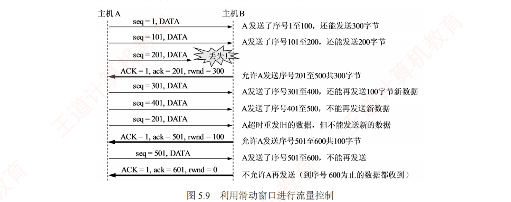
图 5.9 利用滑动窗口进行流量控制 ——本节唯一的图，也是所有流量控制大题的原型，值得逐条读完 。连接建立时 B 告诉 A「我的 rwnd = 400」，随后 B 做了三次流量控制：400 → 300 → 100 → 0 。⭐ 看图请盯住右侧那一列注释 ，它把每一步「还能发多少」都算好了：A 发 1～100 后还能发 300 → 发 101～200 后还能发 200 → seq=201 那条丢了 → B 通告 ack=201, rwnd=300 （允许 201～500）→ A 发 301～400、401～500 → A 超时重发旧的 201，但不能发新数据 → B 通告 ack=501, rwnd=100 → A 发 501～600 → B 通告 ack=601, rwnd=0，不允许再发 。三个必须看懂的细节 ：① 三个流量控制报文都设了 ACK=1 （只有 ACK=1 时确认序号才有意义）；② 第 7 条是「超时重发旧数据」，它不占用新的窗口配额 ——重传的是已经算过账的字节 ；③ rwnd=0 之后 A 就停住不动 了，要等 B 重新通告新窗口值 ——而这正引出了下面的「持续计时器」。
# 方向 报文 图上注释 1 A→B seq=1, DATA A 发送了 1～100，还能发 300B 2 A→B seq=101, DATA A 发送了 101～200，还能发 200B 3 A→B seq=201, DATA 💥 丢失！ 4 B→A ACK=1, ack=201, rwnd=300 允许 A 发 201～500 共 300B 5 A→B seq=301, DATA 发了 301～400，还能再发 100B 新数据 6 A→B seq=401, DATA 发了 401～500，不能再发新数据 7 A→B seq=201, DATA 超时重发旧数据，但不能发新数据 8 B→A ACK=1, ack=501, rwnd=100 允许 A 发 501～600 共 100B 9 A→B seq=501, DATA 发了 501～600，不能再发 10 B→A ACK=1, ack=601, rwnd=0 不允许 A 再发送 （到 600 为止都收到了）
必记 · 持续计时器：零窗口引发的死锁，只有它能解
死锁怎么来的 ：B 通告零窗口后不久缓存又有空了，于是发一个非零窗口通知——但这个报文段在路上丢了 。
B 以为已经通知过了、坐等 A 发数据；A 以为窗口还是 0、坐等 B 通知。两边互等，死锁。 解法：TCP 为每个连接设一个持续计时器 ——
只要发送方收到零窗口通知，就启动它；计时器超时就发一个零窗口探测报文段 ，对方在确认这个探测时给出当前窗口值。
若仍为零，则重设计时器；若不为零，死锁即被打破。 ⟹ 关键在于：打破死锁的责任在发送方 （它去探测），而不是让接收方反复通告。
5.3 第 14 题考的就是这一整段，四个选项里只有「发送方启动持续计时器并发探测」是对的。
我的补讲 · 流量控制题的通用三步法：起算点 → 减在途 → 得可用
本节的计算题看着都不一样，其实全是同一个三步：
第 1 步 找【起算点】：rwnd 是从【确认序号 ack】那个字节开始算的，不是从「已发送到哪」算
第 2 步 减【在途未确认】：可用窗口 = rwnd − (已发送但未被确认的字节数)
第 3 步 换算成【序号区间】或【还能发几个段】
⚠️ 第 1 步是全章最容易出错的一步 ——
很多人拿「我发到 700 了」去加 rwnd，得到 701～1200；
正确做法是拿对方确认到哪 （ack）去加。
2021 真题（第 56 题）逐步演示：
t₀：甲发 seq=501、200B 的段 ⟹ 覆盖 501～700
t₁：乙回 ack_seq=501, rcvwnd=500B
第 1 步 起算点 = ack_seq = 501 ⟹ 窗口覆盖 501～1000
第 2 步 在途未确认 = 501～700 共 200B ⟹ 可用 = 500 − 200 = 300B
第 3 步 可发序号区间 = 701 ～ 1000 🐍 已复算 ⟹ 答案 C
⚠️ 注意 ack_seq=501 说明乙还没收到 501～700 那 200B（否则会回 ack=701）——
但窗口照样从 501 起算，那 200B 只是「在途」，仍占着配额。
这一点想通了，本节所有题都是加减法。 我的补讲 · 「缓存只进不出」是本章复现最多的一条线，三题一图连成串
命题人非常喜欢一个设定：接收方的应用进程不从缓存里取数据 。
这个设定的后果是：接收缓存被逐轮填满，rwnd 单调递减 ，最终把发送方卡死。
题 缓存 推演 结局 2015 第 48 题16KB，不取走 慢开始逐轮发 1/2/4/8KB，累计 1/3/7/15KB rwnd 只剩 1KB，cwnd=16KB ⟹ 发送窗口 = 1KB 第 40 题 16KB 3RTT 发了 1+2+4 = 7KB 剩 9KB，cwnd=8KB ⟹ 取 min = 8KB 2016 综 14 20KB，只进不出 收到第 8 个 1KB 段后剩 12KB rwnd=12KB，cwnd=9KB ⟹ 发送窗口 = 9KB
⟹ 三道题的骨架完全一样：算 cwnd 怎么涨 → 算 rwnd 怎么降 → 取 min 。
⚠️ 两个方向别搞反：cwnd 是涨 的（网络没出事就一直涨），rwnd 是降 的（缓存只进不出） ——
它们像两条相向而行的线，题目问的往往就是它们交叉的那一刻。
2015 那道题的妙处在于：交叉点非常靠后（15KB 都发出去了才卡住），一路算下来极容易在中途放弃或算错。 必记 · 传输层流量控制 vs 数据链路层流量控制（两条差别，直接考）
数据链路层（ch3） 传输层（本章） 控制范围 相邻节点之间 端到端（两个进程之间） 窗口大小 一般为固定值 可根据接收方缓存情况动态变化
这两条是书上明写的「必背三条」里的两条，第三条就是它们共同的手段——都靠滑动窗口 。
记法：范围变宽了（一段 → 全程），窗口变活了（固定 → 动态） 。 知识串联 · rwnd 与 OS 的「生产者-消费者」是同一个问题的两个说法
有界缓冲区 接收缓存 = 有界缓冲区，发送方 = 生产者，接收应用进程 = 消费者 ——
这正是《操作系统》2.3 的经典同步问题 。「缓存只进不出」翻译成 OS 的话，就是「消费者永远不执行」。 ⟹ 两边的解法思路也一样：OS 用信号量让生产者阻塞等待 ，TCP 用 rwnd=0 让发送方停止发送 。
区别只在于：OS 的阻塞是本地的、可靠的；TCP 的「通知」要跨网络，通知本身可能丢 ——所以 TCP 才多出一个持续计时器。 死锁 零窗口死锁，与 OS 4 章的死锁是同一个词但不同性质 ：
OS 的死锁是「互相持有对方要的资源」，这里是「互相等待对方的消息」——严格说是活锁/永久等待 。
但解法的哲学一致：打破循环等待的办法，是让其中一方主动去问 （超时探测）。
知识串联 · 「窗口」这个词在 408 里的三种量纲，考前必须分清
单位
出处 窗口的单位 典型表述 ch3 GBN/SR 帧的个数 「发送窗口 WT = 2n −1」 本章 rwnd / cwnd 字节 「rwnd = 400」＝ 400 个字节 拥塞控制的图 MSS 的个数 图 5.10/5.11 纵轴「cwnd = 16」＝ 16 个 MSS
⚠️ 第三行是本章内部的量纲切换，最容易翻车 ：
书上明说「以最大报文段长度 MSS 作为拥塞窗口大小的单位」——
但真题里 cwnd 常常直接给成 KB（如「cwnd=32KB，MSS=1KB」）。
⟹ 做题时先看题干把 MSS 定成多少，再决定「+1」是加 1KB 还是加 1MSS——两者在题干给出 MSS 时是一回事。
ch3 的窗口上限 ch3 有个 rwnd/cwnd 都没有的约束：WT + WR ≤ 2n （序号空间限制） ——
本章序号有 32 位，空间大到几乎不用考虑，只有 5.3 第 15 题（序号绕回）和综 09（最快线路速率）才会碰它。 我的补讲 · 图 5.9 的第 7 条（超时重发旧数据）是全图最容易看漏的一条
十条报文里，第 7 条 seq=201 与第 3 条一模一样——它是超时重传 。图上注释写着「A 超时重发旧的数据，但不能发送新的数据」。 这一条为什么重要 ：它证明重传不占用新的窗口配额 ——
201～300 这 100B 在第 4 条通告 rwnd=300 时就已经算进账了，重传只是把同一笔账再执行一次，不需要新配额。 所以能考 Z ：凡是题干里出现「某段丢失后重传」，算「还能发多少新数据」时不要 把重传的字节再扣一次 ；
但它确实仍属于「已发送未确认」，在 rwnd 起算点 那一侧照样占位。
⟹ 一句话：重传的字节占窗口，但不占「新配额」 ——两者不是一回事。 另注意第 5、6 条的注释措辞：「还能再发送 100 字节新数据 」——书上特意加了「新」字，正是在提醒这一点。
我的补讲 · rwnd=0 之后还能发什么：两个例外，都被考过
图 5.9 最后一条通告 rwnd=0，「不允许 A 再发送」。但「不允许发送」有两个例外：
例外 依据 出处 零窗口探测报文段 持续计时器超时后，发送方主动发一个探测 5.3.5 · 第 14 题 紧急数据（URG） 「即使接收窗口为零，仍可发送紧急数据」 5.3.2 紧急指针字段
⚠️ 第二行藏在 5.3.2 讲紧急指针的地方，离 5.3.5 隔了三节，非常容易读漏。
两个例外的共同逻辑 ：
rwnd=0 限制的是「常规数据流」，而这两样都不是常规数据流 ——
探测报文是控制信息（问一句「你好了没」），紧急数据是带外信息（比如按下 Ctrl+C 中止一个正在刷屏的命令）。
⟹ 若二者都受 rwnd=0 限制，前者会导致死锁永远解不开，后者会导致「接收方卡住时连中止命令都发不出去」。 知识串联 · 「零窗口探测」与 OS 的忙等/阻塞唤醒是同一道选择题
谁负责唤醒 零窗口死锁的解法有两条路，TCP 选了其中一条 ：
方案 做法 TCP 选了吗 为什么 接收方负责 缓存一有空就（反复）通告新窗口 没有 通告报文本身会丢，且丢了就没人再管 发送方负责 启动持续计时器，超时就去探测 选了 ✓ 探测丢了还会再探，天然可重试
⟹ 设计原则：在不可靠信道上，「重试的责任」应该放在需要那个结果的一方 身上 。
这与 TCP 的重传由发送方 负责（而不是接收方主动索要）是同一个道理。
OS 的对照 《操作系统》里，进程等待资源有「忙等（自旋）」与「阻塞—唤醒」两条路 ；
TCP 的持续计时器更像「带超时的阻塞 + 定期轮询」 ——既不忙等（不是拼命发），也不纯阻塞（不会永远睡死）。
在一个消息可能丢失的世界里，纯粹的「阻塞等唤醒」是不安全的，必须配一个超时兜底。 📄 p.243
5.3.6 TCP 拥塞控制
考点追踪：TCP 的滑动窗口机制（2010、2014–2016、2025）· 慢开始算法的原理（2014、2015、2025）· 拥塞避免算法的原理（2009、2017、2020、2022、2023）· 拥塞控制与传输效率分析（2016、2023）· 拥塞窗口演化分析（2016、2023）
拥塞控制是指防止过多的数据注入网络，以保证网络中的路由器或链路不致过载。 出现拥塞时，通信端点通常无法直接获知拥塞的具体细节，只能通过表现（如时延增加）间接感知。
必记 · 拥塞控制 vs 流量控制：书上用一个数字例子把两者切得干干净净
拥塞控制 流量控制 范围 全局性 （所有主机、路由器、链路）端到端 （点对点的两个进程）要解决 网络总负载超过承载能力 接收方处理不过来 靠谁 发送方自己 根据网络反馈调 cwnd接收方 用窗口字段通告 rwnd共同点 都是通过调节发送方的发送速率来实现控制
书上的判别例（🐍 已复算，数字自洽） ：某链路速率
10Gb/s ——
① 一台大型机以 1Gb/s 向一台 PC 传文件 ：
1Gb/s < 10Gb/s，网络不堵，但 PC 处理不过来 ⟹ 要流量控制 ；
② 100 万台 PC 各以 1Mb/s 通过该链路传文件 ：
100 万 × 1Mb/s = 1000Gb/s ≫ 10Gb/s ⟹ 要拥塞控制 。
⟹ 判据一句话：瓶颈在「那一台接收机」就是流量控制，瓶颈在「这条路」就是拥塞控制。 必记 · 全章母公式：发送窗口上限 = min[rwnd, cwnd]
「当题目中同时出现接收窗口（rwnd）和拥塞窗口（cwnd）时，发送窗口的上限值应取两者中的较小者。」 ——这是书上 p.246 的原话，也是本章出现频率最高的一句。为便于分析拥塞控制，书上假设：数据仅单向传输、接收方只发确认、接收方缓存足够大（于是发送窗口只受 cwnd 限制）、以 MSS 为 cwnd 的单位 。
⚠️ 这个「缓存足够大」的假设只在讲解 时成立；真题里几乎必然会同时给出 rwnd，就是为了考你记不记得取 min。
1. 慢开始与拥塞避免
慢开始 拥塞避免 什么时候用 cwnd < ssthresh cwnd > ssthresh （相等时两者皆可，常规做法用拥塞避免 ）怎么涨 每收到一个对新报文段的确认，cwnd 加 1 ⟹ 每 1RTT 加倍 每经过一个传输轮次，cwnd 加 1 （不是加倍） 规律 指数增长 线性增长（加法增大） 初值 cwnd 通常设为 1MSS —
陷阱 · 慢开始的「慢」不是增长慢——这是本节最容易被反向利用的一句话
书上明写：慢开始的「慢」并非指增长速度慢，而是指从较小的 cwnd（如 1）开始，谨慎试探网络状态。
事实上慢开始是指数 增长，比拥塞避免的线性增长快得多。 命题人的用法：把「慢开始阶段窗口增长比拥塞避免慢」放进选项，看你会不会被名字骗。
⟹ 记法：「慢」形容的是起点，不是速度。
2. 网络拥塞时怎么办
无论处于慢开始阶段还是拥塞避免阶段，只要发送方判断网络出现拥塞（发生超时）： ① ssthresh 调整为当前 cwnd 的一半（不小于 2）；② cwnd 重置为 1；③ 重新执行慢开始算法。
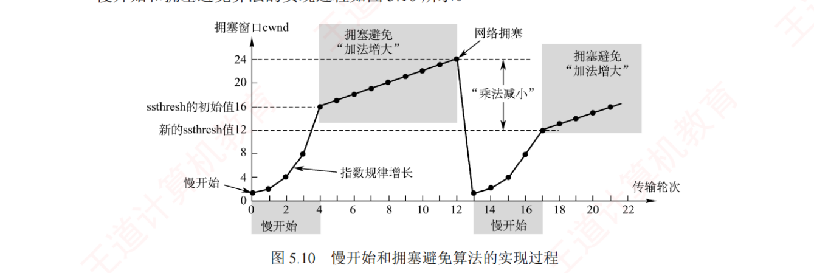
图 5.10 慢开始和拥塞避免算法的实现过程 。横轴是传输轮次 0～22 ，纵轴是 cwnd （刻度 0/4/8/12/16/20/24）。图上四处标注：「ssthresh 的初始值 16 」「慢开始（指数规律增长）」「拥塞避免『加法增大』」「网络拥塞 」「『乘法减小』」「新的 ssthresh 值 12 」 。⭐ 看这张图请把它读成一条折线的三段 ：① 陡峭上升段 （0→4 轮，1→2→4→8→16，指数）；② 缓坡段 （4→12 轮，16→24，每轮 +1）；③ 断崖 （第 12 轮 cwnd=24 时拥塞 ⟹ ssthresh 变 12、cwnd 摔回 1 ）；然后重复 ①②🐍 我逐轮复算过整条曲线，与书图完全吻合 ：r0=1 r1=2 r2=4 r3=8 r4=16 | r5=17 … r12=24（拥塞）| r13=1 r14=2 r15=4 r16=8 r17=12（封顶！） r18=13 … r21=16。⚠️ 图上第二次爬坡的 8 → 12 那一步是全章最重要的一格 ：它不是 8→16，因为 2×8=16 已经超过了新的 ssthresh=12，只能封顶到 12 ——这就是下面那条「封顶规则」的图证。 陷阱 · 封顶规则：本章最高频的暗坑，三道题连坐
「在慢开始阶段，若 2cwnd > ssthresh，则下一个传输轮次后的 cwnd 应等于 ssthresh，而不是 2cwnd。」
书上给的例子：第 16 个轮次 cwnd=8、ssthresh=12 ⟹ 第 17 个轮次后 cwnd=12 ，而不是 16。
出处 ssthresh 本来会涨到 实际封顶到 图 5.10 第 17 轮 12 8×2 = 16 12 5.3 第 33 题 6 4×2 = 8 6 5.3 综 11 9 8×2 = 16 9
⟹ 逐轮演化写到一半时，每写一个新值都先问一句：「这个数超过 ssthresh 了吗？」 超了就改写成 ssthresh。
⚠️ 这个坑之所以致命，是因为它一旦踩中，后面所有轮次全部错位 ，而且错得很像对的。 3. 快重传与快恢复
个别报文段偶然丢失但网络并未真拥塞时，等超时才重传会误判为拥塞并启动慢开始，导致效率下降 。为此引入快重传与快恢复。
快重传
接收方 ：收到报文段后立即确认 ，不等捎带；收到失序报文段时立即发冗余 ACK 。发送方 ：连续收到 3 个冗余 ACK 即判定丢失，立即重传，无须等超时 。
快恢复
收到 3 个冗余 ACK ⟹ 说明后续报文段已到达接收方，网络并未严重拥塞 。ssthresh = cwnd / 2，cwnd = ssthresh（不是 1！），然后直接进入拥塞避免 。 因为跳过了从 cwnd=1 开始的慢开始过程，所以叫「快恢复」。
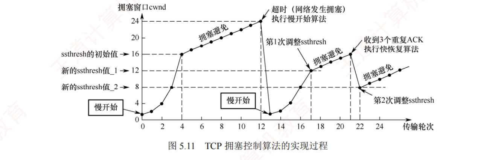
图 5.11 TCP 拥塞控制算法的实现过程 ——四种算法唯一的一张全景图 。前 20 个轮次与图 5.10 完全相同 ；关键在第 21 轮 ：cwnd 涨到 16 时，发送方连续收到 3 个冗余 ACK ，此时不启动慢开始，而执行快恢复 ：ssthresh = 16/2 = 8 ，cwnd 也 = 8 ，随即进入拥塞避免线性爬升 。图上另标注「超时（网络发生拥塞）执行慢开始算法」「第 1 次调整 ssthresh = 12」「第 2 次调整 ssthresh = 8」「收到 3 个重复 ACK 执行快恢复算法」。⭐ 把图 5.10 与 5.11 叠在一起看，两次「出事」的形状截然不同 ：超时 ⟹ 一条垂直的断崖 ，从 24 直落到 1 ；3 个冗余 ACK ⟹ 只是下了一个台阶 ，从 16 落到 8 这个形状差异就是 5.4 疑难点第 3 条的答案 ：超时说明连 ACK 都回不来了（可能严重拥塞甚至瘫痪），冗余 ACK 说明后面的段都到了（网络还能通）——拥塞程度不同，退让幅度就不同 。🐍 已复算：… r20=15 r21=16（3 冗余 ACK）r22=8 r23=9 r24=10 …，与书图吻合。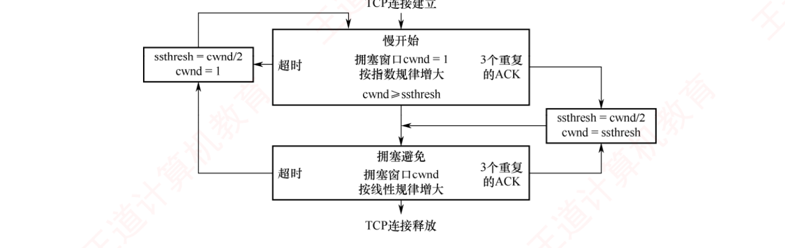
图 5.12 TCP 拥塞控制的流程图 ——把四种算法的迁移关系一张图讲完，是本节最好的默写模板 。从「TCP 连接建立」向下进入慢开始（cwnd=1，指数增大） ；向右一条箭头标「3 个重复 ACK 」通往 ssthresh=cwnd/2、cwnd=ssthresh ；向左一条箭头标「超时 」通往 ssthresh=cwnd/2、cwnd=1 ；向下当 cwnd ≥ ssthresh 时进入拥塞避免（线性增大） ，它同样有「超时」与「3 个重复 ACK」两条出口 。⭐ 看这张图只需记住一件事：两个出口的 ssthresh 处理完全一样 （都是减半），差别只在 cwnd ——超时置 1，冗余 ACK 置 ssthresh 。这是本节所有跳变题的判据，把这一句背下来，图 5.12 就等于会画了。 必记 · 四种算法的总结（一句话卡，闭眼要能背）
① 当 TCP 连接建立或网络出现超时 时：采用慢开始和拥塞避免 ⟹ ssthresh = cwnd/2，cwnd = 1 。 ② 当发送方收到 3 个冗余 ACK 时：采用快重传和快恢复 ⟹ ssthresh = cwnd/2，cwnd = ssthresh 。 另记两句边角 ：「拥塞避免并不能完全避免拥塞」 ——它只是让 cwnd 线性增长，使网络较不容易 拥塞；
「乘法减小」 指 ssthresh 减半这个动作，「加法增大」 指拥塞避免每轮 +1。
我的补讲 · 逐轮演化四步法：本章 16 道拥塞控制题的统一解法
第 1 步 写下起点：cwnd₀ 与 ssthresh 各是多少（题干没给 ssthresh 就看问的是「最长」还是「最短」）
第 2 步 慢开始：cwnd ×2，但每一步都检查【是否超过 ssthresh】，超了就封顶到 ssthresh
第 3 步 cwnd ≥ ssthresh 后：每轮 +1（线性）
第 4 步 出事件就跳变： 超时 ⟹ ssthresh = cwnd/2，cwnd = 1（立即，不占 RTT）
3 冗余 ACK ⟹ ssthresh = cwnd/2，cwnd = ssthresh（进拥塞避免）
拿 2022 真题（第 57 题）走一遍：时刻 0 超时、此时 cwnd=16KB、MSS=1KB，问几个 RTT 后 cwnd 重回 16KB？
时刻 0 1 2 3 4 5 6 7 8 9 10 11 cwnd 1 2 4 8 9 10 11 12 13 14 15 16
ssthresh = 16/2 = 8；慢开始 3 轮到 8（1→2→4→8），随后拥塞避免 8 轮（8→16）⟹ 共 11RTT 。
⚠️⚠️ 全题唯一的坑在时刻 0 那一格：「cwnd 从 16 变成 1」是立即 发生的，不占用 1RTT 。
若误以为要花 1RTT，会算成 12RTT。综 08 是同一道题换了数字（12→16，答案同样是 11RTT）。 我的补讲 · 三组镜像题：同一题干、只换一个条件，答案就完全不同
本节最值得做的不是单题，是这三对镜像题——它们把命题人的手法暴露得一览无余。
镜像对 题 A 题 B 差在哪一个字 ① 触发事件 第 31 题 ：cwnd=34KB 时超时 ⟹ ssthresh=17，cwnd=1，4RTT 后 = 16KB 第 37 题 ：cwnd=34KB 时收 3 冗余 ACK ⟹ ssthresh=17，cwnd=17 ，4RTT 后 = 21KB 「超时」vs「3 个冗余 ACK」 ② 最短 vs 最长 第 40、49 题 ：问「最少 时间」⟹ ssthresh 设得足够大，全程指数增长 2020 第 52 题 ：问「最长 时间」⟹ 把 ssthresh 压到起点以下，全程线性增长 「最少」vs「最长」 ③ 谁卡住了 第 49 题（2017） ：接收缓存 64KB ≫ 目标 32KB ⟹ 由 cwnd 决定 ，5RTT2014 第 47 题 ：rwnd 恒为 10KB，cwnd 涨到 12KB ⟹ 由 rwnd 决定 ，发送窗口 = 10KBrwnd 够不够大
2020 第 52 题的解法值得单独抄一遍 （🐍 已复算）：
问：cwnd 从 8KB 增长到 32KB 所需的【最长】时间（RTT=2ms）？
思路：ssthresh 可按需设置 ⟹ 设 ssthresh ≤ 8KB，则从头到尾都在拥塞避免阶段（每轮只 +1）
8 → 32 需要增加 24KB ⟹ 24 个 RTT ⟹ 24 × 2ms = 48ms
⟹ 一句话记牢：问「最少」就让它指数长，问「最长」就让它线性长。
这两个词是题干里的开关，看到就该先决定用哪种增长方式，再动笔。 我的补讲 · 「加 1」到底什么时候发生：一个被反复设坑的时点问题
书上说「每收到一个对新报文段的确认，cwnd 就加 1」——注意是收到确认后 ，不是发出去就加。
这个时点差别在两道题里直接决定答案：
题 题干里的关键措辞 影响 第 31 题 「这些报文段均得到确认后 」 确定是「第 4 个 RTT 结束时 」而非「开始时」 ⟹ cwnd=16 而不是 8 第 37 题 「第 4 个 RTT 后，发出的报文全部得到确认」 cwnd 再 +1 ⟹ 21KB 而不是 20KB 2024 第 59 题 第三次握手捎带 1000B，收到确认后 才涨到 2000B 第 2 个 RTT 只能发 1000B
书上说 X ：收到确认才加。
潜台词是 Y ：
cwnd 的值反映的是「网络已经证明 能承受多少」，而不是「我打算发多少」 ——
没有确认回来，就等于网络还没给出证明。
所以能考 Z ：
凡是题干出现「均得到确认」「全部确认」这类字眼，就是在提醒你把那一轮的 +1 算进去；
反之若题干写「第 n 个 RTT 开始时」，那一轮的增长还没发生。
读题时把这类时间状语圈出来，是本节最容易被忽略的得分动作。 我的补讲 · 效率与利用率：本节还藏着三条容易被忽略的计算公式
拥塞控制这一节的题不全是逐轮演化，还有三类「算速率」的题，各有一条母公式（🐍 均已复算）：
题 公式 算例 综 04 最大数据传输速率 = 窗口字节数 × 8 ÷ RTT 64×1024×8 ÷ 20ms ≈ 26.2Mb/s 综 05 信道利用率 = 一个窗口的数据量 ÷ [(单报文发送时延 + RTT) × 带宽] 发送时延 0.08ms，RTT 40ms ⟹ 1000×60×8 ÷ 40.08ms ≈ 11.98Mb/s ⟹ 11.98% 综 09 序号绕回的最快线路速率 ：(232 ÷ MSL) ÷ 载荷 × 每段总字节 × 81500B 载荷要发 1566B ⟹ ≈ 299Mb/s
⚠️ 综 09 有一个别处不会提醒你的开销陷阱：以太网开销要算满 26B （18B 首尾 + 7B 前同步码 + 1B 帧开始定界符 ） ，不是 18B。
ch3 学以太网帧格式时那 8B 前导，在这里第一次真正参与计算。
⚠️ 综 10 还有一个「反着求」的变体 ：
已知「测到的平均吞吐率恰好是发送速率的一半」，反推窗口值 ——
其含义是「发送时间 = 停下来等确认的时间」，即发完一个窗口正好耗时 1 个 RTT。
8X ÷ (128×2×1000) = 256 × 0.001 ⟹ X = 8192B 🐍 已复算
这三条公式外加 5.2 的传输效率公式，就是本章全部的「算速率」题型，共 4 条，一条不多。 陷阱 · 两个单位坑，2016 综合真题在同一道题里同时埋了它们
书上专门给了一个【注意】框 ：
K 表示文件大小或存储空间时等于 1024（大写 K）；k 表示传输速率或网络通信时等于 1000（小写 k）。
坑 正确做法 算错会怎样 K vs k 20KB = 20 × 1024 B；163.84k b/s 里的 k = 1000 差 2.4%，答案对不上任何选项 比特 vs 字节 窗口、序号一律是字节 ；线路速率一律是比特/秒 ⟹ 要 ×8 或 ÷8 第 15 题：40Gb/s 要先 ÷8 得 5×109 B/s，否则 859ms 算成 107ms
⟹ 动笔前先在草稿上写一行单位换算（「1KB = 1024B，1kb/s = 1000b/s，窗口按字节，速率按比特」），比算完再回头查快得多。 知识串联 · AIMD 这套思想，ch4 4.1.5 已经讲过一次骨架
拥塞控制 ch4 4.1 把「拥塞控制」列为网络层的功能之一，讲的是开环 vs 闭环 、拥塞的定义 ；
本章讲的是TCP 这一个具体的闭环实现 。
⟹ 两章不重复：ch4 回答「什么是拥塞」，本章回答「TCP 怎么应对拥塞」。 AIMD 「加法增大、乘法减小」（AIMD）是本章给出的具体策略 ：涨得慢（每轮 +1）、退得狠（直接减半） ——
这种「缓涨急退」的不对称，是所有共享资源竞争协议的共同选择 ，
与 ch3 以太网 CSMA/CD 的二进制指数退避 （冲突一次退避范围翻倍）是同一种哲学。 谁来告诉你堵了 ⚠️ TCP 拥塞控制有一个很别扭的前提：路由器不会通知端主机它堵了 ——
所以 TCP 只能靠「丢包」这个间接信号来推断拥塞 。
这就是为什么「超时」被当作拥塞的判据，也是为什么在无线网络 里 TCP 表现不好（无线丢包多半是误码而非拥塞，TCP 却一律当拥塞处理、白白降速）。
知识串联 · 两个窗口、两种控制，最后汇成一句话
两个窗口
rwnd（接收窗口） cwnd（拥塞窗口） 谁维护 接收方 发送方 怎么告知 写在 TCP 首部的窗口字段 里 不在任何字段里 ——发送方自己算反映什么 接收方的缓存余量 网络的拥塞程度 典型变化 缓存只进不出时递减 网络正常时递增
⚠️ 第二行是最容易被忽略的一条：TCP 首部里没有 「拥塞窗口」字段 ——
5.3 第 16 题的错误选项正是「拥塞窗口是接收端确定的」。
cwnd 是发送方脑子里的一个变量，网络上任何地方都看不到它。
收口 书上 p.246 的收尾原话 ：
「发送方实际的发送窗口大小由流量控制和拥塞控制共同决定 」
⟹
min[rwnd, cwnd] 。
这一句同时收束了 5.3.5 与 5.3.6 两节，是全章的落点。 背景 · 考试不碰：拥塞控制那几段「历史与哲学」的叙述
5.3.6 开头和结尾有几段偏叙述性的文字：「出现拥塞时通信端点无法直接获知拥塞的具体细节」「如果网络频繁发生拥塞，ssthresh 会下降得很快」
「所谓拥塞避免，是指在该阶段将拥塞窗口按线性规律增长，从而使网络较不容易发生拥塞」 。这几句作为「理解材料」很好，但它们不产生任何可计算的考点 ，读一遍有感觉即可，不必逐字记。唯一要挑出来记住的是最后那句的否定形式 ：
「拥塞避免并不能完全避免 拥塞」 ——
命题人喜欢把它改成「采用拥塞避免算法后网络不会再发生拥塞」当错误选项。
我的补讲 · 逐轮演化题的草稿纸模板：照这个画，基本不会错
本节 16 道题里有 12 道要画逐轮表。与其每次现想，不如固定一个草稿模板：
第一行 轮次: 0 1 2 3 4 5 6 …
第二行 cwnd: ? ? ? ? ? ? ? …
第三行 标注: ↑起点 ↑到达 ssthresh 改线性 ↑事件
写之前先在最左边写死三个数： cwnd₀ = ___ ssthresh = ___ rwnd = ___
每写一格问一句：这个数超过 ssthresh 了吗？超了就封顶。
写完最后问一句：题目问的是 cwnd 还是【发送窗口】？后者要再取一次 min[rwnd, cwnd]。
⚠️ 最后那一问是本节的隐形失分点 ：
很多题算对了 cwnd，却忘了题目问的是发送窗口 ——
2014 第 47 题（cwnd 涨到 12KB 但 rwnd 恒为 10KB ⟹ 答案 10KB）、2015 第 48 题（cwnd=16KB 但 rwnd 只剩 1KB ⟹ 答案 1KB）都是这么设的。
⟹ 王道解析对 2014 那题还给了一个秒杀法：发送窗口必然 ≤ rwnd = 10KB，四个选项里只有一个不超过 10KB，可以直接选 ——
这类「用上界筛选项」的技巧在考场上很省时间。 我的补讲 · 2025 真题（第 60 题）：本章最新、也最能体现「三个量一起动」的一道
题干 ：MSS=1000B，阈值 8000B，当前 cwnd=2000B，rwnd=4000B；甲收到确认段 ack_seq=3001，
且甲已发送但未确认的数据是 3001～4000。问甲还能发几个 TCP 段？
① cwnd 怎么变：cwnd(2000) < ssthresh(8000) ⟹ 还在【慢开始】
每收到一个 ACK 加 1MSS ⟹ cwnd = 2000 + 1000 = 3000B
② 发送窗口 ： min[cwnd 3000, rwnd 4000] = 3000B
③ 扣在途 ： 已发未确认 3001～4000 共 1000B ⟹ 可用 = 3000 − 1000 = 2000B
④ 换算成段数 ： 2000 ÷ MSS 1000 = 2 个段 🐍 已复算 ⟹ 答案 A
这道题一口气用上了本章四个知识点：慢开始的增长规则 · min 取小 · 扣除在途未确认 · MSS 换算段数 。
⚠️ 最容易漏的是第 ③ 步 ：
ack_seq=3001 说明 3000 及以前已确认，但 3001～4000 还在路上，它们仍占着窗口。
漏掉这一步会得到 3 个段（选项 B），正好是命题人准备好的坑。
⟹ 把它和 2021 第 56 题并排做 ：
两题的骨架完全一样（起算点 → 减在途 → 得可用），
只是 56 题问的是「序号区间」，60 题问的是「几个段」——换了个输出格式而已 。 知识串联 · 拥塞控制这一节，和 ch3 的 CSMA/CD 退避是同一种「退让哲学」
冲突与退让
ch3 CSMA/CD 二进制指数退避 本章 TCP 拥塞控制 坏消息怎么察觉 检测到冲突 超时 / 3 个冗余 ACK （都是间接推断）退让方式 退避范围翻倍（指数） ssthresh 减半（乘法减小） 恢复方式 成功一次即复位 慢慢爬（加法增大） 共同点 退得快、进得慢——因为「退慢了会崩溃，进快了会再崩溃」
⟹ 这种不对称是所有「多方共享一个资源、又没人统一指挥」的系统的共同选择。
公平性 AIMD 还有一个 408 不考、但值得知道的性质：它能让多条竞争的 TCP 流自动收敛到公平共享带宽 ——
加法增大让落后的流追上来，乘法减小按比例削减领先的流。
这就是为什么全世界的 TCP 用同一套简单规则就能让互联网不崩溃。 我的补讲 · ssthresh 的「不得小于 2」，是一条几乎没人记得的边界条件
书上讲拥塞处理时括号里写了一句：ssthresh 调整为当前 cwnd 的一半，但不得小于 2 。
这句话平时用不到，因为真题里的 cwnd 都比较大（8KB、16KB、34KB），减半后远大于 2。
但它的存在说明了一件事 ：ssthresh 有下界，意味着无论网络多糟，TCP 都不会退化成「永远只发 1 个段」 ——
如果允许 ssthresh 降到 1，那么 cwnd=1 时就立刻满足「cwnd ≥ ssthresh」，TCP 会跳过慢开始直接线性爬升，恢复速度反而更慢。 所以能考 Z ：若某道题给出很小的 cwnd（比如 cwnd=2KB、MSS=1KB 时超时），照公式 ssthresh 该是 1，
但按这条规定要取 2 ——这是本章唯一一个「公式算出来还要再检查一次下界」的地方。
⚠️ 与之配套的另一个边界：cwnd 重置为 1MSS （不是 1B，也不是 0） 。
两个「1 和 2」的边界放在一起记，逐轮演化表的第一格就永远不会写错。
知识串联 · 「间接感知」这件事，在 408 的三个地方都出现过
看不见就只能猜 本节开头那句「通信端点无法直接获知拥塞的具体细节，只能通过表现间接感知」，是一种反复出现的处境 ：
场合 看不见什么 靠什么间接判断 本章 TCP 拥塞控制 路由器队列有多长 超时 / 3 个冗余 ACK（即「丢包」） ch3 CSMA/CD 别人是不是也在发 边发边听，检测到冲突 《操作系统》页面置换 哪一页将来最不会被用 访问位/修改位等历史信息（LRU 用过去猜未来）
⟹ 三处的共同结构是：真正想知道的量测不到，只能拿一个相关的可观测量 去代替。
代价也一样：代理量一旦「说谎」，机制就会做错决定 ——
TCP 在无线网络里表现不好，正是因为无线的丢包多半来自误码而非拥塞，可 TCP 一律当拥塞处理，白白把 cwnd 砍掉一半。
《操作系统》里 LRU 在「循环访问刚好超出内存一页」时全部失效（Belady 现象的近亲），是同一类问题。 📄 p.253
5.3.7 两道综合真题：本章的两块基石
本章 27 道真题里只有 2 道综合题 （2012、2016），但它们把 TCP 的两种考法各占了一头。这两道题不是「多做的题」，而是必须吃到能默写 的两块基石。
基石一 · 2012 统考真题（纯抓包解析）
我的补讲 · 2012 真题的三把刀：不用一个公式，全靠「数字节 + 查表 + 做减法」
题给了 5 个 IP 分组的十六进制转储（每个含 IP 首部 20B + TCP 首部 20B），问三件事。🐍 五个分组全部逐字段复算过。
# 总长度 标识 TTL 源 → 目的 IP seq ack SYN ACK 需填充 1 48 019b 128 192.168.0.8 → 211.68.71.80 846b41c5 00000000 1 0 否 2 48 0000 49 211.68.71.80 → 192.168.0.8 e0599fef 846b41c6 1 1 否 3 40 019c 128 192.168.0.8 → 211.68.71.80 846b41c6 e0599ff0 0 1 是 4 56 019d 128 192.168.0.8 → 211.68.71.80 846b41c6 e0599ff0 0 1 否 5 40 6811 49 211.68.71.80 → 192.168.0.8 e0599ff0 846b41d6 0 1 是
三把刀，每一把对应一问：
刀 动作 结论 ① 看源 IP + 看标识 源 IP 在 IP 首部第 13～16 字节 ；标识是个每发一个数据报就 +1 的计数器 1、3、4 号由 H 发出（源 IP 都是 192.168.0.8），且标识 9b→9c→9d 递增，说明发送顺序就是 1→3→4 ② 看 SYN/ACK 组合 1 号 SYN=1,ACK=0 ；2 号 SYN=1,ACK=1 ；3 号 SYN=0,ACK=1 1、2、3 号正是三次握手 ③ 做两个减法 应用数据量 = 5 号的 ack − 3 号的 seq；跳数 = 出发 TTL − 到达 TTL 846b41d6 − 846b41c6 = 0x10 = 16B ；64 − 49 = 15 个路由器
⚠️ 还有一个纯 ch3 的知识点被塞了进来：快速以太网数据帧有效载荷最小 46B，3、5 号分组总长度只有 40B（0x28）< 46B ⟹ 需要填充 。
这道题的真正难点不在知识，在耐心 ：40 个字节要一个不错地数下来。考场上的做法是先用铅笔在题面上按 4 字节一组画竖线，把首部切成 5 行，再逐行对照图 5.5 与 ch4 的 IP 首部图。 基石二 · 2016 统考真题（纯机制推演）
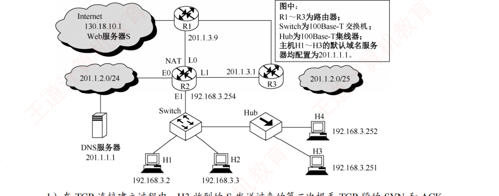
2016 统考真题（本章综 14）的网络拓扑 ——本章唯一一道「一题串五考点」的母题 。图上是 H3 经交换机/路由器连到服务器 S 的简单拓扑，题干给出 RTT=200ms、S 的接收缓存 20KB 且只进不出、H3 的初始序号 100、MSS=1KB 。⭐ 看这张图其实不需要看拓扑 ——拓扑只是背景，真正的题眼全在题干那几个数字上 。把它裁进来是为了提醒一件事：综合题的图往往只提供「谁跟谁通信」，真正的信息量在文字里 ，别把时间花在读图上，要花在圈数字上。 我的补讲 · 2016 真题四问逐步拆：五个考点串成一条链，断一环全废
问 考点 推演 答案 (1) 三次握手字段 第二次握手 SYN=1、ACK=1 ；确认序号 = 第一次握手的序号 + 1 = 100 + 1 SYN=1, ACK=1, ack=101 (2) rwnd 递减 + min[rwnd,cwnd] S 缓存只进不出 ⟹ 收到第 8 个 1KB 段后剩 20−8 = 12KB ；慢开始下收到第 8 个确认后 cwnd = 9KB rwnd=12KB；发送窗口 = min[12,9] = 9KB (3) 序号换算 + 平均速率 窗口为 0 时已发 20KB ⟹ 下一个序号 = 20×1024 + 101 = 20581 ；共耗 5RTT （每轮 1/2/4/8/5 KB） 20581；20KB ÷ (5×200ms) = 163.84kb/s (4) 最短释放时间 S 无数据 ⟹ ACK 与 FIN 合并、跳过 CLOSE-WAIT ⟹ 1.5RTT 1.5 × 200 = 300ms
⚠️ 第 (3) 问里最容易漏的一格是「最后一轮只发了 5KB 而不是 16KB」 ：
前四轮已发 1+2+4+8 = 15KB，缓存只剩 5KB，所以第 5 轮被 rwnd 卡到 5KB，正好把 20KB 发满。
若照着慢开始一路 ×2 算下去，会得到 4RTT 或 6RTT，后面的速率也全错。
⚠️ 第 (3) 问的单位坑：20KB 是 20×1024×8 比特，除以 1 秒得到的是 163840b/s = 163.84kb/s （小写 k = 1000） ——
书上专门为这一问加了「K 与 k」的注意框，可见踩坑的人不少。 我的补讲 · 为什么说 2016 是「母题」：五道选择题都是从它身上撕下来的
2016 的哪一问 被撕成了哪道选择题 (1) 三次握手确认序号 2011 第 44 题 （乙的 SYN+ACK 该填什么）· 2019 第 51 题 （第三次握手的 ack）(2) 缓存只进不出 ⟹ rwnd 递减 2015 第 48 题 （16KB 缓存，4RTT 后发送窗口 = 1KB）· 第 40 题 （16KB 缓存，剩 9KB）(2) min[rwnd, cwnd] 2014 第 47 题 · 2010 第 43 题 · 2025 第 60 题 (3) 序号换算 2020 第 53 题 （SYN/FIN 各吃一个序号）(4) 最短释放时间 第 26 题 · 2022 第 58 题 · 2024 第 59 题 ——三题都靠「跳过 CLOSE-WAIT」这一条
⟹ 把 2016 这一道题吃透，等于同时吃透了 8 道选择题的内核。
复习建议：这道题至少默写两遍 ——第一遍对答案，第二遍把每一问背后的「那一句原理」写在旁边。
本章若只剩一小时复习时间，就做这一道。 知识串联 · 2012 真题是一道「三章合一」的题，它逼你把 ch3、ch4、ch5 摊在一起
ch4 IP 首部 总长度、标识、TTL、源/目的 IP ——四个字段全部来自 ch4 的图 4.5。
尤其「标识是计数器、每发一个数据报 +1」这一条，ch4 讲分片时提过，本题拿它判断发送顺序 ，是个全新用法。 ch5 TCP 首部 seq、ack、SYN、ACK ——本章图 5.5 的四个字段，用来判定三次握手 。ch3 以太网 「总长度 < 46B ⟹ 需要填充」 ——来自 ch3 的以太网最小帧长 64B（其中数据部分最小 46B） 。⟹ 一道 15 分的题，考点跨了三章。这正是王道在 ch4 复习提示里说的「结合第 3 章、第 5 章出综合题的概率很大」。
本章看起来综合题少，但它常常以「别人家综合题的一部分」的身份出现 ——2023 那个「假缺口」多半就是这么来的。
知识串联 · TTL 相减反推跳数：这一招在 ch4 已经考过一次
TTL 2012 真题第 3 问「S 发出的分组到 H 经过了几个路由器」，用的是 出发 TTL − 到达 TTL ：
S 发出时 TTL = 0x40 = 64（Linux 的典型初值），到达 H 时 TTL = 0x31 = 49 ⟹ 64 − 49 = 15 跳 。⚠️ 这里有个前提必须自己补上：「S 发出的 IP 分组的标识是 6811H」这句话是用来定位到 5 号分组 的 ——
不先认出「哪个分组是 S 发的」，就不知道该拿哪个 TTL 去减。 ch4 的同款 ch4 4.4 的 2024 综合真题也考过 TTL （RIP 收敛 + TTL + BGP 五问），
那道题问的是「TTL 设成多少才够用」，本题问的是「TTL 掉了多少说明走了几跳」 ——同一个字段的正反两种问法。 Traceroute 再往外一层：Traceroute 正是靠故意把 TTL 设成 1, 2, 3… 逐跳逼出 ICMP 超时报文来画路径的 ——
三个用法（反推跳数 / 设够用 / 逐跳探测）共用同一个字段，是 ch4 与 ch5 之间最结实的一根线。
背景 · 考试不碰：两道综合题里的「解释性问答」部分
综合题里有两问是纯文字论述，不涉及任何计算：综 01 「为什么发送方在超时前可能就不需要重传了」·
综 02 「接收方对失序报文段，丢弃与暂存两种做法各有什么优缺点」这两问的答案在正文里已经完整讲过（累积确认的容错 / SR 与 GBN 的缓存取舍），不必单独背诵 ，
读懂即可，考场上不会要你写这种论述 。但要留意它们的结论句 会变成选择题 ：
「暂存失序报文段可以减少发送方的重传次数、减少带宽消耗，但增加接收方缓冲区开销」
——这一句正是 5.4 疑难点第 2 条「TCP 为什么更像 SR」的依据。
我的补讲 · 综合题的通用作答顺序：本章只有两道，但这套顺序全书通用
本章综合题少，正好用来把「作答顺序」练成肌肉记忆。ch4 那 10 道综合真题用的是同一套：
第 1 步 圈数字：把题干里所有带单位的数抄到草稿纸顶端（RTT / MSS / 缓存 / 初始序号 / MSL / 带宽）
第 2 步 判类型：这题是【静态解析】（给转储、给表，数字节）还是【动态推演】（给初值，逐轮推）？
第 3 步 静态 ⟹ 先画首部格子（IP 20B 五行 + TCP 20B 五行），逐字段填；
动态 ⟹ 先画逐轮表（轮次 / cwnd / rwnd / 累计已发），逐行推
第 4 步 每问作答前回读题干那一句：问的是【cwnd】还是【发送窗口】？【最短】还是【最长】？【字节】还是【段数】？
第 5 步 单位收口：K=1024 还是 k=1000？要不要 ×8？
⭐ 第 4 步是本章特有的高危点 ：
2016 那道题四问里，有三问都在这一步上设了分岔
（「发送窗口」而非 cwnd · 「最短时间」而非常规时间 · 「平均速率」要用 k=1000） 。
⟹ 建议在草稿纸顶端固定写一行提示：「问谁？最短还是最长？什么单位？」 ——写这九个字花 5 秒，能救回 15 分。 📄 p.265
5.4 本章小结及疑难点
我的补讲 · 这 6 条不是「小结」，是干扰项工厂——每一条都能直接改写成选择题
王道的疑难点向来是最好的复习材料，本章这 6 条尤其密集：全是「为什么」型问答，而「为什么」的反面就是干扰项 。
# 疑难点 回扣正文 命中的题 1 MSS 过大过小的影响 5.3.2 选项字段 · ch4 分片 第 12、55 题（首部开销占比） 2 TCP 是 GBN 还是 SR 5.3.4 冗余 ACK · ch3 3.4 综 02 · 第 50 题 3 超时为何置 1、冗余 ACK 为何减半 5.3.6 慢开始/快恢复 第 31 vs 37 镜像对 4 为何不用两次握手 5.3.3 三次握手 第 19、20、44 题 5 为何初始序号要随机 5.3.3 · 5.3.4 序号 第 44 题（乙的 seq 任意）· 第 15 题（序号绕回） 6 无差错网络里可靠交付是否多余 5.1.1 差错检测 · ch4 尽最大努力交付 第 01、05 题
⟹ 6 条里有 3 条（2、3、5）是正文里一笔带过、这里才讲透 的，绝不能因为它排在最后就跳过。 1. MSS 设置得过大或过小会怎样
必记 · MSS 的目的是「避免 IP 分片」，与接收缓存无关
MSS 的设定与接收方的缓存大小或接收窗口无关 ，其主要目的是避免 IP 分片 。
后果 为什么 MSS 太小 网络利用率显著降低 每个段至少要加 40B 首部（TCP 20 + IP 20） ；极端情况数据只有 1B，有效载荷占比仅 1/41 MSS 太大 在 IP 层可能被分片 一旦任一分片丢失，整个报文段都要重传 ，反而增加开销与延迟
⟹ MSS 应尽可能大，但以在 IP 层不发生分片为前提 。
由于互联网路径动态变化，最佳 MSS 难以确定，因此 TCP 规定默认 MSS 为 536B ——
即所有互联网主机都应能接收 536B 数据 + 20B TCP 首部 = 556B 的 TCP 报文段。
536 与 556 这两个数字全章只在这里出现一次，是现成的选择题素材。 2. TCP 用的是 GBN 还是 SR
表面看 TCP 用累积确认像 GBN，但区别在于：接收方不会丢弃 正确到达但失序的报文段，而是将其缓存，并反复发送冗余 ACK 。再加上 SACK 选项 （明确告知哪些非连续数据块已收到），使重传行为更接近 SR。⟹ TCP 的重传机制是 GBN 与 SR 的混合体。
3. 超时为何把 cwnd 置 1，冗余 ACK 为何只减半
必记 · 一句话：两种事件反映的拥塞严重程度不同
事件 说明网络处于什么状态 退让幅度 3 个冗余 ACK 后续报文段已成功到达 （否则触发不了重复确认）⟹ 网络仍具备传输能力，拥塞较轻 cwnd 减半（乘法减小） 超时 连 ACK 都回不来 ⟹ 很可能严重拥塞甚至局部瘫痪 cwnd 重置为 1MSS，重新慢开始
⟹ 「病得轻就少吃药，病得重就下猛药」——记住这个比喻，两种跳变就再也不会记反。 4. 为什么不采用两次握手
为了防止已失效的连接请求报文段突然传送到服务器，导致错误建立连接。 场景：A 的 SYN 在网络中长时间滞留，A 超时重传后正常完成一次通信并断开；此后那个滞留的旧 SYN 才到达 B 。
发生什么 后果 三次握手 B 回 SYN-ACK；A 发现确认序号无效，直接丢弃、不回 ACK 连接建不起来 ✓ 两次握手 B 收到旧 SYN 就认为连接已建立 ，坐等 A 发数据；A 并无此意，不响应 B 长期占用资源，资源浪费 ✗
5. 为什么初始序号不能固定
若每次都用相同的初始序号（如 1），那么迟到的旧报文段的序号可能落在新连接的有效窗口内 ，导致 B 误把它当成新数据接收，造成数据混乱。⟹ 初始序号必须随时间递增并随机化，确保迟到的旧报文段序号不会被新连接接受。
6. 无差错的网络里，TCP 的可靠交付是否多余
不多余。 即使底层链路无差错、节点不故障，IP 层本身是无连接且不可靠的 ，仍可能：① IP 数据报独立选路，到达时失序；② 路由异常导致数据报在网中循环，TTL 减为 0 后被丢弃；③ 路由器突发拥塞时来不及处理而丢弃 。三种情况全发生在网络层，与链路差错无关。
我的补讲 · 第 6 条是全章的收口，它回答了「为什么要有这一章」
这一条读起来像凑数，其实是全书结构上的一个关键回答。
书上说 X ：即使链路完美，IP 层仍会导致失序、丢弃、重复。
潜台词是 Y ：不可靠不是硬件的错，是设计选择 ——
IP 之所以「尽最大努力」，是因为它刻意 不去记状态（不记连接、不排序、不重传），这样才能做到简单、可扩展、跨异构网络。 所以能考 Z ：凡是问「网络层已经很可靠了，还要 TCP 干什么」的选项，答案永远是「要」 ——
因为 TCP 修的不是「链路的错」，而是「IP 主动放弃的那部分职责」。 ⟹ 这一条把 ch4 与 ch5 的分工彻底说清了：ch4 负责「送到」，ch5 负责「送对、送全、送有序」 。
两章加起来才等于「可靠地送到」。
我的补讲 · 全章读完，这 12 个问题答得上来就算过关
按小节顺序排的自测清单，答不上来就回到对应小节：
# 问题 回哪一节 1 端到端 / 主机到主机 / 相邻节点，三个定语分别属于哪一层？ 5.1.1 2 四层的服务访问点各是什么字段？端口号三段区间？ 5.1.2 3 表 5.1 九个应用的传输层协议能否默写？OSPF 用的是什么？ 5.1.3 4 UDP 五条优点；「面向报文 vs 面向字节流」四行对照？ 5.2.1 5 伪首部 12B 的五个字段？回卷 + 取反两个动作？ 5.2.2 ⭐ 6 UDP 分片四步 + 传输效率公式（IP 首部何时取 60B）？ 5.2.2 7 TCP 首部 16 个字段；数据偏移/窗口/序号的单位各是什么？ 5.3.2 8 三次握手与四次挥手的字段表能否默写？四个时间量？ 5.3.3 ⭐⭐ 9 SYN/FIN/纯 ACK 谁消耗序号？「已发数据量」怎么反推？ 5.3.3 10 3 个冗余 ACK ＝ 几个确认？累积确认卡在哪？ 5.3.4 11 流量控制三步法：起算点是谁？在途未确认要不要扣？ 5.3.5 ⭐ 12 逐轮 cwnd 演化四步 + 封顶规则 + 两种跳变？ 5.3.6 ⭐⭐
⭐ 打星的第 5、8、11、12 四条是本章的命门：它们对应 23 道 5.3 真题里的绝大多数，以及两道综合真题的全部。
其余八条答不上来只是丢选择题的分，这四条答不上来是丢整道大题。 知识串联 · MSS 与 MTU 把本章接回了 ch3 和 ch4
MSS vs MTU 疑难点第 1 条的整段话，本质上是在讲「传输层要迁就链路层」 ：
MSS 定多大，取决于路径上最小的 MTU——而 MTU 是 ch3 的概念 。⟹ 一条数据从上到下要过三道长度关：应用层随便多长 → TCP 按 MSS 切 → IP 按 MTU 分片 → 链路层按最小/最大帧长填充或拒绝 。
MSS 设好了，第三道关就用不上（不分片）；MSS 设大了，第三道关就要动手，而且一片丢全段重传。 分片的代价 ch4 学分片时只讲了「怎么分」，本节补上了「为什么要避免分片」 ：
IP 层不做重传，丢一片就要靠上层重传整个 报文段 ——这是分片最贵的地方。 1/41 那个数字 疑难点第 1 条给的「数据 1B ⟹ 有效载荷 1/41」，与 5.2 的传输效率公式是同一类计算 ，
也与 2021 第 55 题（12B 数据的 UDP 60% vs TCP 37.5%）同源 ——「首部固定、数据越小效率越低」这条规律，本章考了三次。
知识串联 · 本章与 ch6 应用层的接口：下一章会从这里接着讲
端口号 本章 5.1.2 的熟知端口表，到 ch6 会被逐个展开 ：
HTTP 80、FTP 21/20、SMTP 25、DNS 53、DHCP 67/68 ——现在记熟，ch6 就只剩协议流程要学。 谁用 TCP 谁用 UDP 表 5.1 那九行，是 ch6 每一节的开场白 ：
ch6 讲 DNS 会先说「DNS 用 UDP，因为查询短」，讲 HTTP 会先说「HTTP 用 TCP，因为要可靠」——理由全在本章。 连接开销 2025 第 61 题（UDP 1RTT vs TCP 2RTT）在 ch6 会以另一个面貌重现 ：
HTTP/1.0 的非持久连接 每取一个对象都要三次握手，所以「一个页面 N 个对象 ⟹ 2N 个 RTT」；
HTTP/1.1 的持久连接 省掉的正是这笔账。
⟹ 本章的「1RTT / 1.5RTT / 2RTT」到 ch6 会直接变成计算网页加载时间的公式，别学完就丢。